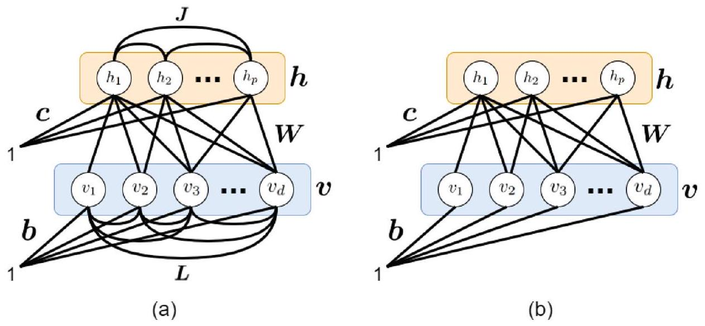
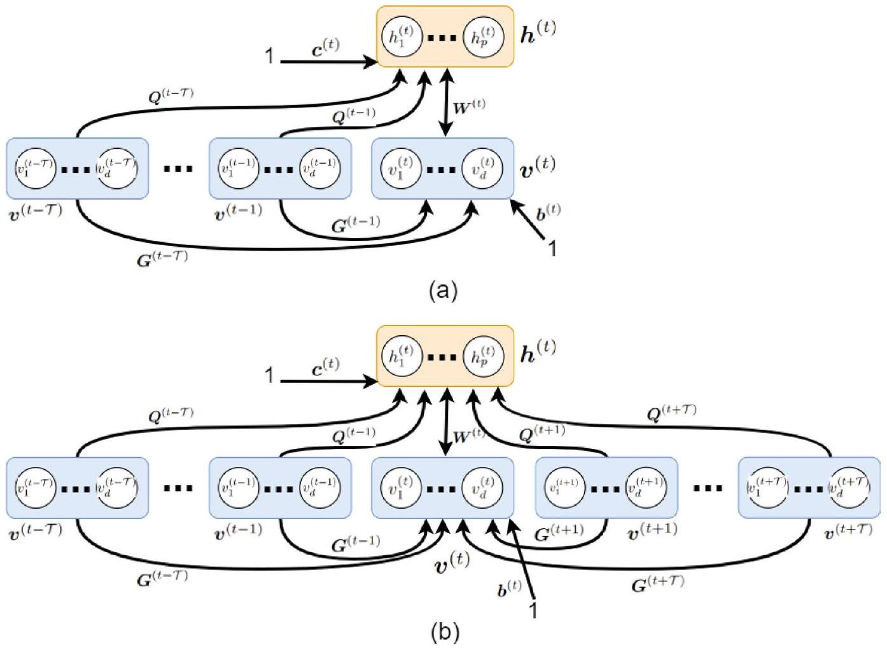
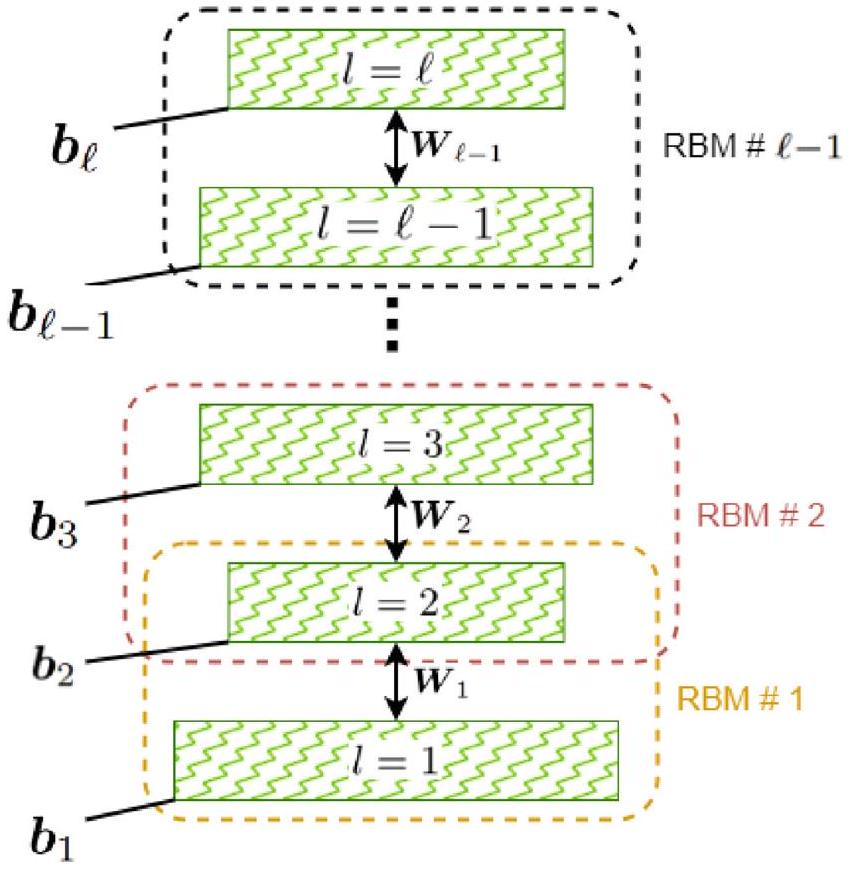
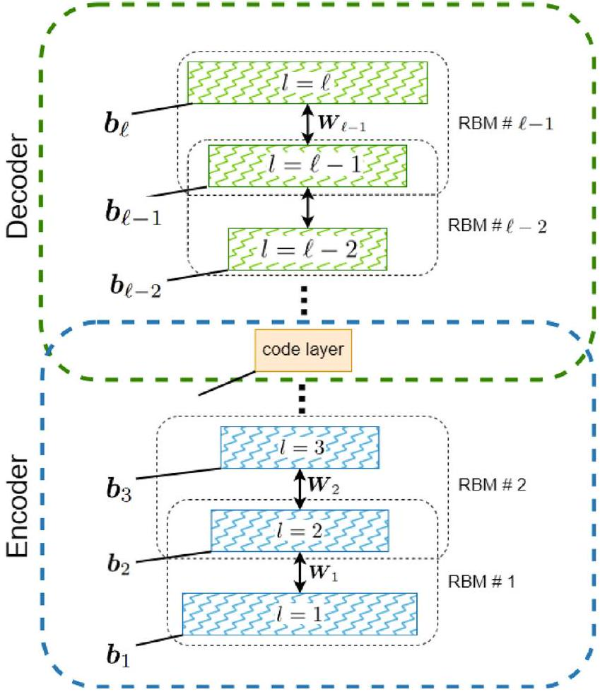

導論：從波茲曼分布到深度學習的一條歷史線
▼這一章要講的，其實是一個「血緣故事」
Boltzmann Machine（BM）、Restricted Boltzmann Machine（RBM）、Deep Belief Network（DBN）——這些名字聽起來各自獨立，但其實是同一條歷史線上的親戚。這一章開頭不急著丟公式，先把這條血緣講清楚，後面每個知識點才知道自己在整條線的哪個位置。
故事要從統計物理講起。波茲曼分布（Boltzmann distribution），也叫吉布斯分布（Gibbs distribution），很早就被提出，用來描述物理系統——一群粒子在某個組態（configuration）下出現的機率。這套機率架構後來被用在一個具體模型上：Ising 模型（Ising model），描述一堆「自旋（spin）」粒子——你可以想成每個粒子只有 +1 或 -1 兩種狀態——透過交互作用彼此影響。
接著關鍵的一步發生了：研究者發現，Ising 模型其實可以被理解成一種神經網路。這個洞見催生了 Hopfield network——一種用 Ising 結構來做「聯想記憶（associative memory）」的網路模型。
Hopfield 啟發了 Hinton：BM 與 RBM 誕生
受到 Hopfield network 的啟發，Hinton 和同事提出了 Boltzmann Machine（BM）與Restricted Boltzmann Machine（RBM）。這兩個模型都屬於能量模型（energy-based model）——這個名字正是來自波茲曼分布，因為它們的機率都是由一個「能量函數」決定的（越低能量、機率越高，這個直覺在 kp4 會細講）。
BM 跟 RBM 的差別很單純：BM 在層內、層間都有連結；RBM 把層內連結拿掉，只留層與層之間的連結（後面章節會細講結構）。
那 BM/RBM 跟老前輩 Hopfield network 差在哪？學權重的方法不一樣。Hopfield network 用的是 Hebbian learning——一套簡單的規則，粗略講就是「一起活化的神經元，權重就變強」；BM/RBM 則是用最大概似估計（maximum likelihood estimation, MLE）來學權重，透過機率模型去擬合資料分布。本章不會細講 Hebbian learning 的公式本身——那是 Hopfield 的背景知識，重點會放在 BM/RBM 怎麼用 MLE 訓練。
Hebbian 學習的短板，逼出了反向傳播
Hebbian learning 有個明顯的短板：泛化能力差，學到的東西很難類推到沒看過的新資料。為了解決這個問題，反向傳播演算法（backpropagation）被提出——結合梯度下降與鏈式法則，成為訓練神經網路的通用工具。
但早期的深層網路很快撞上另一個麻煩：梯度消失問題（vanishing gradient）。網路一深，梯度往回傳的過程中越變越小，深層的參數幾乎學不到東西。剛好同一時期，支援向量機（SVM）搭配核方法（kernel methods）開始崛起，表現亮眼。兩相對照之下，神經網路的研究熱度大幅下滑,這段時期常被稱為「神經網路的寒冬」。
Hinton 沒有放棄：RBM 逐層訓練，撐起 DBN
寒冬期間，Hinton 沒有放棄。他和同事（包括 Max Welling）重新回頭研究 RBM，提出用 MLE 訓練 RBM 的方法。BM 跟 RBM 都是生成模型（generative model）——可以透過吉布斯取樣（Gibbs sampling，kp3 會細講）產生新的資料樣本。Hinton 觀察到一個關鍵事實：神經網路裡任兩層之間的權重，都可以被看成一個 RBM。
2006 年，他提出了逐層貪婪訓練（layer-by-layer greedy training）：把深層網路拆開，一層一層當作獨立的 RBM 來訓練。把訓練好的 RBM 一層層疊起來，就組成了 Deep Belief Network（DBN）。這個方法給深層網路一個很好的初始化,有效緩解了梯度消失問題,讓更深的網路第一次真正訓練得動,並且成功應用在語音辨識、動作辨識等領域。Hinton 當時對 RBM 抱有很高期待,認為 DBN 有機會定義神經網路的未來。
但故事還沒完：ReLU 與 dropout 讓 RBM 淡出舞台
然而沒多久,兩個新技術橫空出世:ReLU（Rectified Linear Unit）激活函數與 dropout 正則化方法。這兩者不只解決了過擬合（overfitting）問題,也順帶緩解了梯度消失——而且不需要 RBM 預訓練。於是,單靠反向傳播搭配 ReLU、dropout,就足夠強大,神經網路開始在影像辨識等領域全面開花。
RBM、DBN 因此逐漸從「訓練深層網路的必要手段」,退居為歷史與理論意義上的重要篇章——它們仍然是理解能量模型、生成模型、機率圖模型的重要基礎,但已經不是現代深度學習訓練的主流工具。
本章路線圖
有了這條歷史線做骨架,本章接下來的安排是:
| 章節 | 內容 |
|---|---|
| §2 背景知識 | 機率圖模型、Markov random field、Gibbs sampling、波茲曼分布、Ising 模型、Hopfield network |
| §3 RBM | RBM 的結構、條件分布、Gibbs 取樣、MLE 訓練、對比散度（contrastive divergence） |
| §4 分布型態 | 可見層與隱藏層變數的具體分布形式 |
| §5 CRBM | 條件式 RBM（Conditional RBM） |
| §6 DBN | 把多個 RBM 堆疊起來的深度生成模型 |
口語復盤:波茲曼分布 → Ising 模型 → Hopfield network → BM/RBM(MLE 取代 Hebbian)→ DBN(逐層貪婪訓練緩解梯度消失)→ ReLU/dropout 讓 backprop 單獨就夠強,RBM/DBN 轉為歷史地位。 記住這條線,後面每個知識點都是在替這條線的某一段補上數學細節。
🤖 AI 生圖提示詞
WHAT（骨架）: 一條左到右的時間軸因果鏈：Ising 模型 → Hopfield 網路（Hebbian 學習）→ BM/RBM（改用 MLE，用實心節點與說明凸顯這是關鍵分岔）→ 灰色低谷方塊「梯度消失／神經網路寒冬」→ 2006 年綠色高峰節點「逐層貪婪訓練、DBN、深度學習復興」→ 高峰後再分岔成兩條路徑：一條亮綠延續向上（ReLU+dropout，今日主流）、一條灰色虛線衰減（RBM/DBN，現在主要剩歷史意義）。 WHY（因果或反直覺）: 這整章要傳達「RBM/DBN 曾經是深度學習復興的關鍵引擎，但後來被自己間接催生的技術（backprop+ReLU+dropout）邊緣化」。反直覺點在於：一個模型解決了梯度消失問題、開啟了深度學習復興，最終卻因為別的方法把同一個問題解決得更簡單，而被邊緣化。 MUST show（必備要素）: ① 主因果路徑箭頭從左到右；② Hopfield→BM/RBM 節點旁標明訓練方式的分岔（Hebbian vs MLE）；③ 灰色「寒冬」低谷區塊；④ 綠色 2006 峰值節點；⑤ 峰值後分岔成「明亮延續」與「淡出虛線」兩條路徑；⑥ 橘色文字標出反直覺轉折點的位置。 AVOID（禁止）: 不要用方框把每個模型名稱框起來再用直線連接（名詞連連看）；不要放完整 LaTeX 公式字串；不要讓兩條分岔路徑看起來一樣顯眼（必須一亮一淡）；不要省略寒冬低谷。 STYLE: flat vector, viewBox 720×360, teal 主題（主 #0f766e、深 #134e4a、淺底 #ccfbf1），白底，Arial，紅 #e53e3e、綠 #16a34a、橘 #ea580c 為語意色，圓角、粗線條、無陰影無漸層。
波茲曼分布最初是用來描述什麼系統的？
BM/RBM 與 Hopfield network 最主要的差異是什麼？
2006 年 Hinton 提出的「逐層貪獋訓練」方法，主要解決了什麼問題？並促成了哪個模型？
ReLU 與 dropout 出現後，對 RBM/DBN 的地位造成什麼影響？
背景知識：機率圖模型與 Markov Random Field
▼機率圖模型：用一張圖表示高維機率分布
高維機率分布往往很複雜，變數一多，直接寫聯合機率分布會變得又長又難處理。機率圖模型（Probabilistic Graphical Models, PGM）就是為了解決這個問題而生的一類統計模型：用圖（graph）來表示高維機率分布的結構。
具體怎麼對應？很直覺：
- 節點（node） 對應一個隨機變數。
- 邊（edge） 表示變數之間的（不）獨立關係——有邊連接，代表兩個變數之間存在某種相依性；沒有邊，往往代表某種條件獨立。
PGM 的好處是提供了一種緊湊、有效率的方式，來表達變數之間複雜的條件（不）獨立關係，不用把整個聯合分布攤開來寫。
兩大類：有向的 Bayesian network vs. 無向的 Markov network
PGM 大致可以分成兩大類：
- Bayesian network（貝氏網路）：用有向無環圖（directed acyclic graph）表示變數間的依賴關係——邊有方向，代表「誰影響誰」，例如「因」指向「果」。
- Markov network（馬可夫網路），也叫 Markov Random Field（MRF）：用無向圖（undirected graph）表示——邊沒有方向，只表達「這兩個變數有關聯」，不強調誰因誰果。
BM 與 RBM 的定位：它們是 MRF 的例子
這一節的重點結論很簡單：Boltzmann Machine（BM）與 Restricted Boltzmann Machine（RBM）都屬於 MRF 的例子——因為它們的圖結構是無向的：可見層與隱藏層（甚至層內)之間的連結，都沒有方向性,只表示「這兩個單元之間有交互作用/耦合關係」。
這個定位很重要,因為它決定了 BM/RBM 的機率形式：MRF 的聯合機率通常寫成能量函數的指數形式（也就是波茲曼分布，kp4 會細講），而不是像貝氏網路那樣用一串條件機率鏈式相乘。
口語復盤：PGM = 用圖表示機率分布結構,節點是變數,邊是（不）獨立關係;有向圖是貝氏網路,無向圖是 Markov network/MRF;BM 跟 RBM 因為圖是無向的,所以是 MRF 的例子。 記住這個歸類，後面看到 BM/RBM 的能量函數形式,就知道它跟 MRF 的機率表示法是一脈相承的。
🤖 AI 生圖提示詞
WHAT（骨架）: 左右並排兩張小型圖模型。左「Bayesian network」：三個節點 A、B、C 用**有方向箭頭**連接（A→B、A→C、B→C）。右「Markov network / MRF」：三個節點 v₁、v₂、h₁ 用**無方向對稱直線**連接，並標示 BM/RBM 屬於這一邊。 WHY（因果或反直覺）: 有向圖的邊代表因果/條件依賴方向（誰決定誰），無向圖的邊代表對稱交互作用（互相牽動，沒有先後）。反直覺點：BM/RBM 的權重連結表面上長得像關係線，但它決定的是「雙向互相影響」而不是「誰導致誰」——這是它被歸類為 MRF 而非 Bayesian network 的關鍵原因。 MUST show（必備要素）: ① 左側三節點 + 三條帶箭頭方向邊；② 右側三節點 + 三條無箭頭對稱邊；③ 明確標示右側屬於 BM/RBM；④ 一句話點出「箭頭消失＝意義完全不同」的轉折。 AVOID（禁止）: 不要只畫節點名詞方框、不要漏畫箭頭方向（左圖必須清楚看出方向性）、不要放完整 LaTeX 公式、不要讓兩張圖使用相同顏色（需可一眼區分有向/無向）。 STYLE: flat vector, viewBox 720×320, teal 主題（主 #0f766e、深 #134e4a、淺底 #ccfbf1）搭配中性灰 #64748b／#334155 表示左側 Bayesian network，白底，Arial，圓角、粗線條、無陰影無漸層。
機率圖模型（PGM）中，節點與邊分別代表什麼？
Bayesian network 與 Markov network（MRF）最主要的結構差異是？
Boltzmann Machine（BM）與 Restricted Boltzmann Machine（RBM）屬於哪一類 PGM？為什麼？
Gibbs Sampling：用條件分布拼出聯合分布的樣本
▼為什麼需要 Gibbs sampling：聯合分布太難直接抽
Gibbs sampling 是一種 Markov Chain Monte Carlo（MCMC）方法，目的是從一個多變量分布 $\mathbb{P}(X)$ 中取樣。
它特別好用的場景是：直接對聯合分布 $\mathbb{P}(X)$ 取樣很困難（可能是維度太高、形式太複雜），但對條件分布
$$ \mathbb{P}\left(x_{j} \mid x_{1}, x_{2}, \ldots, x_{j-1}, x_{j+1}, \ldots, x_{d}\right) $$
取樣卻是可行的——也就是說，只要固定住其他所有變數，單獨對第 $j$ 個變數取樣是容易的。這種「拆開來一個一個處理」的想法，正是 Gibbs sampling 的核心。
演算法怎麼跑：一次動一個維度
設 $X \in \mathbb{R}^{d}$，$\boldsymbol{x}=[x_1, x_2, \ldots, x_d]^{\top}$。Gibbs sampling 從任意一個初始點出發，每次只更新一個維度，其餘維度保持不變（式 (1)）：
$$ x_{j} \sim \mathbb{P}\left(x_{j} \mid x_{1}, \ldots, x_{j-1}, x_{j+1}, \ldots, x_{d}\right) . \tag{1} $$
具體流程是：
- 隨便選一個初始點 $\boldsymbol{x}^{(0)}$。
- 依序對每個維度 $j=1,\ldots,d$，用式 (1) 抽出新的 $x_j$，同時用上其他維度最新的值。
- 這樣掃過所有維度算一輪（一次 iteration）。
- 重複多輪，直到收斂。
Burn-in：早期樣本要丟掉
因為一開始的初始點是隨便選的，最初幾輪抽出來的樣本還不能代表目標分布，這段時期叫 burn-in（燃燒期），這些早期樣本通常會被丟棄。好消息是：實務上 burn-in 收斂得通常很快，只需要幾次迭代就足夠拿到有效樣本，不用擔心要跑非常久。
Gibbs sampling 是 Metropolis-Hastings 的特例
值得記住的一個理論性質：Gibbs sampling 是 Metropolis-Hastings 演算法的一個特例，特別之處在於它的接受率恆為 1——也就是說，每次依條件分布抽出的候選值都會被直接接受，不需要像一般 Metropolis-Hastings 那樣還要計算接受機率、決定要不要接受這個候選樣本。這也是 Gibbs sampling 效率高的原因之一。
在 BM/RBM 中的用途：先打地基
在 Boltzmann Machine 與 RBM 裡，Gibbs sampling 常被用來在隱藏層（hidden）與可見層（visible）之間交替取樣——固定可見層抽隱藏層，再固定隱藏層抽可見層，一來一往。這個交替取樣的具體演算法在後面章節（RBM 的取樣小節）會細講；這裡先建立 Gibbs sampling 本身的通用概念，作為理解後面演算法的基礎。
口語復盤：Gibbs sampling = 直接抽聯合分布太難時，改成一次抽一個變數的條件分布，一輪一輪掃過所有維度；早期樣本（burn-in）要丟掉，但通常很快收斂;它是接受率恆為 1 的 Metropolis-Hastings 特例;在 BM/RBM 裡會用來在可見層、隱藏層之間交替取樣。
🤖 AI 生圖提示詞
WHAT（骨架）: 一組同心橢圓等高線代表二維聯合密度 P(x)，中心是密度最高點。裡面畫一條**階梯狀路徑**：從外圍任意起點開始，交替「水平移動（固定 y 變動 x）」與「垂直移動（固定 x 變動 y）」，逐漸逼近中心。前半段路徑用淡紅虛線（burn-in，捨棄），後半段用深色實線（收斂後，保留為有效樣本）。 WHY（因果或反直覺）: Gibbs 取樣不能直接從整個聯合分布 P(x) 抽樣，只能一次條件固定其他維度、對單一維度抽樣，逐維交替。反直覺點：即使每一步只看起來像「隨便走一小步」，只要交替夠多輪，路徑仍會可靠地逼近真正的密度中心——但前面幾步的樣本不能信任（要丟棄）。 MUST show（必備要素）: ① 同心橢圓等高線＋標示密度中心；② 明確的階梯狀路徑（水平段+垂直段交替，不能畫成平滑曲線）；③ 起點用紅點標示；④ burn-in 段（淡色虛線）與收斂後段（深色實線）視覺區分；⑤ 圖例標示兩段的意義。 AVOID（禁止）: 不要把路徑畫成平滑曲線（必須是階梯狀，體現「一次只動一軸」）；不要省略 burn-in 與收斂後的顏色區分；不要放完整 LaTeX 公式字串；不要用名詞方框代替真正的密度等高線。 STYLE: flat vector, viewBox 720×360, teal 主題（主 #0f766e、深 #134e4a、淺底 #ccfbf1），白底，Arial，burn-in 用淡紅 #fca5a5／過渡橘 #fdba74，圓角、粗線條、無陰影無漸層。
- 拉 ρ 滑桿改變兩個維度的相關程度。
- 按「走一步」讓鏈條交替更新 x、y 各一次，觀察階梯狀路徑如何移動。
- 前 5 步（burn-in）用淡色畫出，之後的步用實色，代表「捨棄前段、只留收斂後」。
Gibbs sampling 最適合用在什麼情境？
式 (1) $x_j \sim \mathbb{P}(x_j \mid x_1,\ldots,x_{j-1},x_{j+1},\ldots,x_d)$ 描述的更新方式是？
Gibbs sampling 與 Metropolis-Hastings 演算法的關係是？
Burn-in（燃燒期）在 Gibbs sampling 中的意義是什麼？
波茲曼分布：能量越低、機率越高
▼從物理系統出發：組態的機率由能量決定
考慮一個由 $d$ 個粒子組成的物理系統 $\{x_i\}_{i=1}^{d}$，每個粒子可以佔據某個離散狀態（例如一個電子的自旋可能是 +1 或 -1）。系統處於某個組態（configuration） $x$ 的機率，由波茲曼分布（Boltzmann distribution）（也叫吉布斯分布）給出（式 (2)）：
$$ \mathbb{P}(x)=\frac{e^{-\beta E(x)}}{Z}, \tag{2} $$
其中 $E(x)$ 是組態 $x$ 的能量，$Z$ 是配分函數（partition function），負責把整個分布歸一化，讓機率加總為 1（式 (3)）：
$$ Z:=\sum_{x} e^{-\beta E(x)} . \tag{3} $$
直覺很好懂：能量 $E(x)$ 越低，$e^{-\beta E(x)}$ 就越大，機率 $\mathbb{P}(x)$ 就越高。系統偏好待在低能量的組態。
$\beta$：逆溫度，決定「偏好」有多強烈
參數 $\beta$ 叫逆溫度（inverse temperature）（式 (4)）：
$$ \beta:=\frac{1}{k_{\beta} T}, \tag{4} $$
其中 $k_\beta$ 是波茲曼常數，$T$ 是絕對溫度。這個式子告訴我們一件很直覺的事：溫度 $T$ 越低，$\beta$ 越大。$\beta$ 越大時，式 (2) 裡能量差異對機率的影響會被放大——低能量狀態的機率優勢會變得更懸殊，系統會更集中地待在少數幾個低能量組態上；反之溫度越高（$\beta$ 越小），能量差異的影響被削弱，機率分布會趨於平均、系統更「亂跑」。這個「溫度決定集中程度」的直覺，後面會呼應到模擬退火。
自由能、內能、熵：三個描述系統整體行為的量
除了單一組態的機率，還可以定義幾個描述整個系統統計行為的量：
自由能（free energy）（式 (5)）：
$$ F(\beta):=\frac{-1}{\beta}\ln(Z) . \tag{5} $$
內能（internal energy），也就是能量的期望值（式 (6)）：
$$ U(\beta)=\sum_{x}\mathbb{P}(x)E(x) . \tag{6} $$
熵（entropy），衡量系統的隨機/無序程度（式 (7)）：
$$ H(\beta)=-\beta F(\beta)+\beta U(\beta) . \tag{7} $$
這三個量彼此透過 $\beta$、$Z$ 串在一起，是統計物理裡描述系統整體狀態的標準工具；不需要死記推導細節，記住「$F$ 是配分函數的對數轉換、$U$ 是能量的期望、$H$ 是無序程度」這三個角色就夠用。
Lemma 1 與 Corollary 1：系統為什麼會朝低能量走
Lemma 1（物理系統傾向低能量狀態）：物理系統傾向佔據低能量的狀態，因此會隨時間持續耗散能量。
這件事背後的原因是熱力學第二定律：孤立物理系統的熵會隨時間增加。熵代表系統的無序程度；當系統把能量釋放到環境中，它會變得更無序（熵增加）。因此系統的能量會隨時間下降，熵隨之上升——兩件事是同一個過程的兩面。
Corollary 1（平衡態下低能量狀態機率較高）：根據式 (2)，在平衡態（equilibrium）下，能量越低的狀態機率越高。但要注意一個容易誤解的地方：系統並不是單調地把某一個特定狀態的機率一路推高，而是隨機地探索各種狀態，整體上逐漸收斂到一個穩態分布——也就是波茲曼分布本身。
呼應模擬退火：這不只是物理直覺
這個「隨機探索、逐漸收斂到低能量分布」的原理，正是模擬退火（simulated annealing）背後的核心思想：一開始溫度高，系統到處亂跑（大範圍探索）；隨著溫度逐漸降低（$\beta$ 增大），系統越來越集中在低能量（也就是好的解）附近。這個溫度排程（annealing schedule）的想法，後面也被直接用在 Boltzmann Machine 的訓練上。
口語復盤：波茲曼分布說「能量低、機率高」；$\beta$（逆溫度）決定這個偏好有多強烈——溫度越低，系統越集中在低能量狀態；熱力學第二定律保證系統會朝低能量、高熵的方向演化；平衡態下系統收斂到波茲曼分布這個穩態，而不是死守單一狀態；這整套「溫度排程」的直覺，就是模擬退火，也是 BM 訓練時退火技巧的來源。
🤖 AI 生圖提示詞
WHAT（骨架）: 左右兩張相同形狀的能量地形（一條有兩、三個深淺不一窪地的曲線）。左「低溫（β 大）」：機率質量畫成集中在最深窪地上方的一根高聳尖峰（其餘窪地只有極淡的小凸起）。右「高溫（β 小）」：同一片地形，機率質量改畫成散布在所有窪地上方、高度相近的多個小凸起（攤平分布）。底部一條共用的 β 軸，從左端「β→0（高溫）」到右端「β→∞（低溫）」。
WHY（因果或反直覺）: 波茲曼分布 P(x)=e^{-βE(x)}/Z 中，β 是逆溫度，直接決定機率質量集中還是分散。反直覺點：地形（能量函數）完全沒變，光是調整一個純量 β，就能讓系統從「隨機探索所有窪地」變成「死守單一最低點」——溫度不改變地形本身，只改變機率如何在地形上分布。
MUST show（必備要素）: ① 左右兩片形狀相同的能量地形曲線；② 左側機率質量呈尖峰集中在最深窪地；③ 右側機率質量攤平散布在所有窪地；④ 共用的 β 軸標示兩端方向；⑤ 一句話點出「同一地形、不同 β」。
AVOID（禁止）: 不要讓左右兩片地形形狀不同（必須是同一片地形，只是機率分布不同）；不要放完整 LaTeX 公式字串（只能標 β 這種單一符號）；不要用方框名詞代替真正的地形曲線與機率質量視覺化。
STYLE: flat vector, viewBox 720×360, teal 主題（主 #0f766e、深 #134e4a）搭配橘色系（#ea580c／#fdba74）區分左右兩側，白底，Arial，圓角、粗線條、無陰影無漸層。- 拉 β 滑桿改變「溫度」；拉 J 滑桿改變交互作用的正負與強度。
- 觀察四根長條（四個組態的機率）如何隨 β、J 變化。
式 (2) $\mathbb{P}(x)=e^{-\beta E(x)}/Z$ 所表達的核心直覺是？
根據式 (4) $\beta:=1/(k_\beta T)$，當溫度 $T$ 降低時，會發生什麼？
Lemma 1 說物理系統傾向佔據低能量狀態並持續耗散能量，其背後依據的物理定律是？
Corollary 1 強調，系統在平衡態下如何趨近波茲曼分布？
Ising 模型：自旋交互作用如何寫成能量函數
▼Ising 模型：自旋變數透過圖交互作用
Ising 模型描述一個物理系統，裡面的變數（稱為自旋，spin）$x_i \in \{-1, +1\}$ 透過一張圖彼此交互作用。系統的聯合機率仍然是 kp4 講的波茲曼分布（式 (2)），差別在於這裡給出了一個具體的能量函數（式 (8)）：
$$ E(x):=\mathcal{H}(x)=-\sum_{(i,j)}J_{ij}x_ix_j , \tag{8} $$
其中 $\mathcal{H}(x)$ 稱為哈密頓量（Hamiltonian），$J_{ij}$ 是粒子 $i$、$j$ 之間的交互作用強度（耦合強度，coupling strength）。
注意這個加總 $\sum_{(i,j)}$ 是對「圖上有連結的粒子對」加總——底層圖結構可以是格子（grid）、環面（torus）等各種形式，而且交互作用通常是局部的（local）：一個粒子通常只跟鄰近的少數粒子有連結，而不是跟系統裡所有粒子都有連結。
$J_{ij}$ 的正負號決定了系統的「性格」
耦合強度 $J_{ij}$ 的正負號，決定了相鄰自旋之間傾向「合作」還是「對抗」：
| $J_{ij}$ 型態 | 名稱 | 行為 |
|---|---|---|
| $J_{ij} \geq 0$ | 鐵磁性（ferromagnetic） | 相鄰自旋傾向對齊（同號） |
| $J_{ij} \lt 0$ | 反鐵磁性（anti-ferromagnetic） | 相鄰自旋傾向不同（異號） |
| 正負混合 | spin glass（自旋玻璃） | 沒有統一的傾向，結構更複雜 |
| $J_{ij}$ 為常數 | 均勻系統（homogeneous） | 所有交互作用強度一致 |
為什麼是「傾向」而不是「一定」？回顧式 (8)：$E(x)=-\sum J_{ij}x_ix_j$。當 $J_{ij}\geq0$ 時，若 $x_i$、$x_j$ 同號（$x_ix_j=+1$），這一項就會讓能量 $E(x)$ 變得更低（因為前面有負號）；而 kp4 已經講過，能量越低機率越高。所以鐵磁性的意思是：同號組態的能量比較低、機率比較高，系統「傾向」對齊，但不是強制對齊。
極端情況：$J_{ij}\to\infty$ 時系統會怎樣
當 $J_{ij}\to\infty$，鐵磁性 Ising 模型會收斂到全部 +1 或全部 -1 的組態，且兩者機率相等。這個極端情況很直觀：耦合強度趨近無限大時，任何不對齊的組態都會被能量函數懲罰到幾乎不可能發生，系統只剩下「全部同號」的兩種組態可選，而這兩種組態因為對稱性機率相等。
另外，值得知道的一個理論性質是：Ising 模型等價於一種 normal factor graph——這說明 Ising 模型跟機率圖模型（kp2 的內容）之間也有結構上的對應關係。
承先啟後：Ising 模型與 BM/RBM 的直接對應
這一節的重點，是為後面 BM/RBM 的結構鋪路。在 BM 與 RBM 裡，權重就可以被解讀成 Ising 模型裡的耦合項 $J_{ij}$，只是這裡的權重通常是用最大概似估計（MLE）學出來的，而不是像原本 Ising 模型的物理參數那樣事先給定。換句話說：
- 能量函數的形式（式 (8) 這種 $-\sum J_{ij}x_ix_j$ 的結構）在 BM/RBM 裡會被直接繼承，只是符號和變數名稱換成神經網路的可見層/隱藏層變數與權重。
- 差別在於怎麼決定 $J_{ij}$（也就是權重）：Ising 模型的物理系統裡 $J_{ij}$ 是已知的物理性質；BM/RBM 則是從資料裡用 MLE 學出來的。
這也解釋了為什麼 BM/RBM 同樣被歸類為能量模型（energy-based model）——它們的機率結構，本質上就是套用了波茲曼分布加上 Ising 式能量函數的框架。
口語復盤：Ising 模型 = 自旋 $x_i\in\{-1,+1\}$ 透過圖局部交互作用，能量函數 $E(x)=-\sum J_{ij}x_ix_j$（式 (8)）；$J_{ij}$ 正負號決定鐵磁/反鐵磁/spin glass/均勻系統；$J_{ij}\to\infty$ 時系統收斂到全 +1 或全 -1；BM/RBM 的權重就是 Ising 模型裡的耦合項 $J_{ij}$，只是改用 MLE 從資料學出來，而不是物理給定。 這條「能量函數形式一致、只是參數來源不同」的對應關係，是理解下一步 RBM 結構的關鍵鑰匙。
🤖 AI 生圖提示詞
WHAT（骨架）: 三個並排的 4×4 自旋方格（每格非黑即白代表 +1/-1）。① ferromagnetic（J>0）：全部同色，整齊一致。② anti-ferromagnetic（J<0）：黑白棋盤格交錯。③ spin glass（正負混合）：黑白雜亂無規律排列，其中一格用紅框標出 frustration（衝突鄰居，無法同時滿足所有鄰居的排列偏好）。 WHY（因果或反直覺）: 同一個能量函數 E(x)=-Σ J_ij x_i x_j，只改變耦合強度 J_ij 的正負號與規律性，就會讓系統的宏觀自旋圖案從「整齊劃一」變成「棋盤交錯」再變成「完全雜亂」。反直覺點：微觀規則只是「鄰居符號相不相符會被獎勵或懲罰」這麼簡單的局部規則，卻能決定完全不同的全域圖案——尤其 spin glass 裡會出現「無論怎麼排都有鄰居衝突」的 frustration 現象。 MUST show（必備要素）: ① 三個 4×4 方格並排；② 第一格全同色；③ 第二格棋盤交錯；④ 第三格雜亂並用紅框標出至少一處 frustration；⑤ 底部一句話點出「同一能量函數、只改 J 正負」的因果連結。 AVOID（禁止）: 不要用名詞方框＋箭頭代替真正的自旋方格圖案；不要省略 frustration 紅框標記；不要放完整 LaTeX 公式字串（只能用 J>0 這種簡短符號標籤）；不要讓三個方格看起來雷同、需要能一眼區分三種圖案。 STYLE: flat vector, viewBox 720×340, teal/深色雙色系（#0f766e 全同色格、#134e4a／#f8fafc 黑白交錯格），frustration 紅框 #e53e3e，白底，Arial，圓角外框、無陰影無漸層。
- 可直接點擊方塊手動翻轉初始狀態，或按「重設」隨機初始化。
- 調 $J$、$\beta$，接著連續按「Gibbs 一步」觀察排列如何演變。
Ising 模型的能量函數（式 (8)）$E(x)=-\sum_{(i,j)}J_{ij}x_ix_j$ 中，$J_{ij}$ 代表什麼？
當 $J_{ij}\lt 0$ 時，Ising 模型屬於哪種類型？相鄰自旋傾向如何？
當耦合強度 $J_{ij}\to\infty$ 時，鐵磁性 Ising 模型會收斂到什麼狀態？
Ising 模型與 BM/RBM 之間最關鍵的對應關係是什麼？
Hopfield 網路：從 Ising 模型到聯想記憶
▼從物理模型到「會記憶」的網路
前面知識點介紹的 Ising 模型，本來是用來描述磁性粒子怎麼互相影響的物理模型。Little 在研究神經網路時，第一個把 Ising 模型「翻譯」成神經網路的版本；後來 Hopfield 把這個想法正式化，變成一個可以拿來做聯想記憶（associative memory）的模型——這正是本知識點的主角：Hopfield 網路。
所謂聯想記憶，白話講就是「給我一部分線索，我就能把整段記憶找回來」——就像你看到朋友的側臉就想起他的全名一樣。Hopfield 網路就是想用神經網路的方式做到這件事。
結構：一個全連接的二元神經網路
Hopfield 網路是一個全連接的遞迴神經網路（fully connected recurrent neural network），每個神經元 $x_i$ 只能是二元值 $x_i\in\{-1,+1\}$（也就是「開」或「關」兩種狀態）。
權重怎麼學：Hebbian learning
Hopfield 網路不像 BM/RBM 用梯度上升去「調」權重，而是用一個更簡單、更直覺的規則——Hebbian learning（常被總結成一句話：「一起激發的神經元，會被綁在一起」）。式 (9)：
$$ w_{ij}:=\begin{cases}x_ix_j & \text{若 } i\neq j,\\0 & \text{若 } i=j.\end{cases}\tag{9} $$
白話：兩個神經元的權重，就是它們狀態的乘積——同號（都 $+1$ 或都 $-1$）就給正權重（互相拉近），異號就給負權重（互相推開）；自己跟自己不連（$i=j$ 時權重為 0，沒有自我連接）。
更新規則：看鄰居的加權和來決定開或關
網路跑起來的時候，每個神經元 $x_i$ 根據它收到的加權訊號來更新自己的狀態，式 (10)：
$$ x_i:=\begin{cases}+1 & \text{若 } \sum_{j=1}^d w_{ij}x_j\geq\theta,\\-1 & \text{否則},\end{cases}\tag{10} $$
其中 $\theta$ 是一個門檻值。也就是說：如果鄰居們的加權投票超過門檻，就變成 $+1$；不夠就變成 $-1$。
另一種二元表示：$\{0,1\}$ 版本
Hopfield 原始論文其實用的是 $x_i\in\{0,1\}$ 這種二元表示（比較像「有／無」而不是「正／負」）。這時候 Hebbian 規則要跟著改寫成：
$$ w_{ij}:=(2x_i-1)(2x_j-1),\quad i\neq j. $$
這個式子其實只是把 $\{0,1\}$ 先轉成 $\{-1,+1\}$（$2x-1$ 這個變換剛好把 $0\to-1$、$1\to+1$），再套用式 (9) 的邏輯——本質上是同一件事，只是換了個座標系。
Hopfield 網路 = Ising 模型的特例
Hopfield 網路其實就是 Ising 模型的一個具體例子：它用的能量函數，跟前面知識點式 (8) 的 Ising 能量函數是完全一樣的。換句話說，Hopfield 網路「狀態越穩定＝能量越低」這個性質，直接繼承自 Ising 模型的物理直覺。除了這種二元版本，也有人發展出連續值版本的 Hopfield 網路，思路一樣，只是把 $\{-1,+1\}$ 換成連續數值。
跟 BM / RBM 的關係：都是「Hopfield 型」網路，但學習方式不同
這裡是本知識點最重要的一個對照：BM 和 RBM 其實也可以被看成一種 Hopfield-type 網路——它們都有 $v$、$h$ 之間彼此影響、都追求某種能量最小化。但兩者有一個關鍵差異：
| Hopfield 網路 | BM / RBM | |
|---|---|---|
| 權重怎麼來 | Hebbian learning（一起激發就綁緊，公式直接算） | 最大概似估計 MLE（用梯度上升迭代學出來） |
| 適用目的 | 聯想記憶（存／取固定的記憶模式） | 生成模型（學資料分佈、產生新樣本） |
Hebbian learning 的問題是：它對「訓練時沒看過」的新資料泛化能力不好——這也是為什麼後面 Hinton 等人會改用 MLE 來訓練 BM/RBM（這正是接下來 kp7 開始要講的重點）。
口語小結：Hopfield 網路 = Ising 模型套上神經網路的外衣，用 Hebbian「一起激發就綁緊」的規則學權重，靠鄰居加權和過門檻來更新狀態；BM/RBM 雖然結構上也是 Hopfield 型網路，但改用 MLE 學權重，這正是它們泛化能力更好、能當生成模型的關鍵分水嶺。
🤖 AI 生圖提示詞
WHAT（骨架）: 一維波浪能量地形剖面圖（橫軸＝狀態空間，縱軸＝能量），曲線上有數個谷底代表不同儲存記憶。一顆紅色小球在坡上標「輸入：被打亂的圖案」，用橘色虛線箭頭沿坡面滾落到最近的谷底（標「儲存的記憶模式／能量最低＝記憶被喚回」，綠色）。旁邊另一個較遠的谷底以淡灰色、虛線框標示「另一個記憶，這次沒被喚起」。 WHY（因果或反直覺）: Hopfield 網路的記憶回想＝能量最小化：系統從被雜訊污染的輸入出發，沿能量地形滾落到最近的局部極小值。反直覺點：起點看起來離好幾個谷底都不算太遠，但系統精準地只滾向「最近」的那一個，其餘吸引子完全沒被觸發——哪個記憶被喚起取決於起點與谷底的相對距離，不是隨機或按儲存順序。 MUST show（必備要素）: ① 一維波浪能量曲線與其下方淡色填色區；② 紅色起點球標「被打亂的圖案」；③ 橘色虛線滾落路徑指向最近谷底；④ 綠色主谷底標「儲存的記憶模式」＋「能量最低＝記憶被喚回」；⑤ 至少一個較遠、淡灰色、虛線框的「另一個記憶，這次沒被喚起」谷底；⑥ 底部反直覺文字說明「哪個吸引子被喚起取決於起點距離」。 AVOID（禁止）: 不要畫成節點＋箭頭的名詞連連看；不要放入任何 LaTeX 公式字串；不要讓「未被喚起」的谷底看起來和主谷底一樣醒目（必須明顯淡化）；不要省略「被打亂的輸入」與「最近谷底」之間的路徑箭頭；不要用漸層或陰影。 STYLE: flat vector, viewBox 720×380, teal 主題（主 #0f766e、深 #134e4a、淺底 #ccfbf1），白底，Arial，紅 #e53e3e（起點）、綠 #16a34a／#15803d（被喚起的記憶）、橘 #ea580c（滾落路徑）、灰 #94a3b8／#cbd5e1（未被喚起的記憶）為語意色，圓角、粗線條、無陰影無漸層。
- 拉「破壞程度 k」滑桿，按「載入受損輸入」隨機翻轉 k 格。
- 按「非同步更新一步」逐格恢復，或按「跑到收斂」一次跑完。
Hopfield 網路中，Hebbian learning 規則式 (9) $w_{ij}=x_ix_j$（$i\neq j$）代表什麼？
式 (10) 的更新規則中，決定神經元 $x_i$ 變成 $+1$ 還是 $-1$ 的依據是？
當 Hopfield 網路採用 $x_i\in\{0,1\}$ 表示時，Hebbian 規則要如何修改？
下列關於 Hopfield 網路與 BM/RBM 關係的敘述，何者正確？
限制波茲曼機的結構：從 BM 到 RBM
▼波茲曼機：一種生成式的機率圖模型
波茲曼機（Boltzmann Machine, BM）是一種生成模型（generative model），也是機率圖模型（Probabilistic Graphical Model, PGM）的一種——它的名字就來自於它所依據的波茲曼分布。BM 是很多後續機率模型的基礎元件之一。
兩層結構：visible 與 hidden
BM 由兩層神經元組成：
- 可見層（visible layer） $\boldsymbol v=[v_1,\ldots,v_d]\in\mathbb R^d$：對應到實際觀察到的資料（例如一張圖片的每個 pixel）。
- 隱藏層（hidden layer） $\boldsymbol h=[h_1,\ldots,h_p]\in\mathbb R^p$：一堆潛在變數（latent variables），負責捕捉資料背後有意義的特徵或嵌入表示。
兩層維度可以不一樣（$d\neq p$），但彼此透過權重緊密連結。
BM 的連結：層間 + 層內都有
在 BM 的圖模型裡：
- $\boldsymbol v$ 和 $\boldsymbol h$ 之間有連結，權重矩陣記為 $\boldsymbol W\in\mathbb R^{d\times p}$（$w_{ij}$ 是 $v_i$ 與 $h_j$ 的連結）。
- 同一層內部也可能有連結：$v$-$v$ 之間的連結記為 $\boldsymbol L\in\mathbb R^{d\times d}$，$h$-$h$ 之間的連結記為 $\boldsymbol J\in\mathbb R^{p\times p}$。
- 每個神經元還各自有一個 bias：$v_i$ 的 bias 是 $b_i$（合起來 $\boldsymbol b\in\mathbb R^d$），$h_i$ 的 bias 是 $c_i$（合起來 $\boldsymbol c\in\mathbb R^p$）。
注意兩個限制條件：$\boldsymbol W$ 是對稱矩陣（$w_{ij}=w_{ji}$）；$\boldsymbol L,\boldsymbol J$ 的對角線元素都是 0（$l_{ii}=j_{ii}=0$），因為沒有「自己連自己」這種連結。
RBM：把層內連結拿掉的特例
限制波茲曼機（Restricted Boltzmann Machine, RBM）就是 BM 的一個特例——它把層內連結全部拿掉，也就是 $\boldsymbol L=\boldsymbol J=\boldsymbol 0$。也就是說，RBM 裡：
- visible 神經元之間沒有直接連結；
- hidden 神經元之間也沒有直接連結；
- 只留下 visible↔hidden 之間的 $\boldsymbol W$ 連結，以及各自的 bias。
原文 Fig. 1 用圖示比較了 (a) BM 和 (b) RBM 的結構差異：BM 圖裡 visible 層內部彼此連、hidden 層內部彼此連，看起來像一團網；RBM 圖則乾淨很多，只剩下 visible 和 hidden 之間的連線，兩層各自內部沒有任何線——這個「拿掉層內連結」的簡化，正是接下來 kp8、kp9 能夠做「整層平行取樣」的關鍵原因。這一節之後主要聚焦在 RBM。
RBM 的能量函數
回顧前面知識點（Ising 模型）的能量函數形式，RBM（作為 Ising 模型的一種）能量函數是式 (11)：
$$ E(\boldsymbol v,\boldsymbol h):=-\boldsymbol b^\top\boldsymbol v-\boldsymbol c^\top\boldsymbol h-\boldsymbol v^\top\boldsymbol W\boldsymbol h.\tag{11} $$
這三項分別對應：$v$ 的 bias 貢獻、$h$ 的 bias 貢獻、以及 $v$-$h$ 之間透過 $W$ 的交互作用貢獻。前面加負號，是因為波茲曼分布的定義是「能量越低機率越高」。
聯合機率：套回波茲曼分布
把式 (11) 代回波茲曼分布公式，就得到 $v,h$ 的聯合機率，式 (12)：
$$ \mathbb P(\boldsymbol v,\boldsymbol h)=\frac1Z\exp(-E(\boldsymbol v,\boldsymbol h))=\frac1Z\exp\left(\boldsymbol b^\top\boldsymbol v+\boldsymbol c^\top\boldsymbol h+\boldsymbol v^\top\boldsymbol W\boldsymbol h\right).\tag{12} $$
其中 $Z$ 是配分函數（partition function），把所有可能的 $(v,h)$ 組合的 $\exp(-E)$ 加總起來，讓機率總和為 1，式 (13)：
$$ Z:=\sum_{\boldsymbol v\in\mathbb R^d}\sum_{\boldsymbol h\in\mathbb R^p}\exp(-E(\boldsymbol v,\boldsymbol h)).\tag{13} $$
訓練 RBM = 降低資料組態的能量
根據前面介紹過的 Lemma 1（物理系統傾向往低能量狀態走），BM/RBM 的訓練目標，本質上就是：讓觀測到的資料組態能量降低，讓沒觀測到（不合理）的組態能量升高。用機率語言講，這等價於最大化觀測資料的 log-likelihood——這正是 kp10 要仔細推導的訓練方法。
口語小結：BM 是「visible + hidden + 層間連結 + 層內連結 + bias」的生成式圖模型；RBM 拿掉層內連結（$L=J=0$），只留 $W$ 和 bias；能量函數式 (11) 決定聯合機率式 (12)、配分函數式 (13) 負責歸一化；訓練的核心精神就是讓資料組態能量低、非資料組態能量高。

🤖 AI 生圖提示詞
WHAT（骨架）: 上半部一個乾淨的二分圖：左側 3 個 visible 節點、右側 2 個 hidden 節點，節點間畫粗細不一的連線代表權重 W，並各自有偏置箭頭 b、c 指入。下半部三個分量長條（−bᵀv、−cᵀh、−vᵀWh）透過匯聚箭頭流入一個 Σ 符號，再流向右側代表總能量 E(v,h) 的大方塊。 WHY（因果或反直覺）: RBM 的能量函數不是三個獨立的數字，而是三股「流」相加後的單一總量；visible 與 hidden 之間才有連結（層內無連結），能量越低代表該組態機率越高（呼應 kp4 的 Boltzmann 分布）。 MUST show（必備要素）: ① 二分圖只有 v-h 跨層連線，無層內連線；② 連線粗細表示權重大小差異；③ 偏置 b、c 的箭頭；④ 三個分量長條大小不同；⑤ 匯聚箭頭 + Σ 符號 + 總能量方塊，呈現「三股流合一」而非三個孤立方塊加加號。 AVOID（禁止）: 不要讓 v-h 連線看起來像交叉錯亂難以分辨獨立性；不要只畫三個文字方塊配加號（那是名詞連連看）；不要用 LaTeX 反斜線；不要漏掉偏置箭頭。 STYLE: flat vector, viewBox 720×380, 深青色系（主 #0f766e、深 #134e4a、淺底 #ccfbf1），警示橘 #ea580c 用於偏置箭頭與匯聚線，白底，圓角，粗線條，無陰影無漸層。
- 用三個核取方塊切換 $v_1,v_2,h$ 目前的組態（會在長條圖高亮）。
- 拉動五個滑桿改變 $b_1,b_2,c,w_1,w_2$，觀察機率分布如何重新洗牌。
RBM 與 BM 的結構差異，關鍵在於？
式 (11) $E(v,h)=-b^\top v-c^\top h-v^\top Wh$ 中，$v^\top Wh$ 這一項代表什麼？
關於 BM 參數的敘述，何者正確？
根據 Lemma 1 與波茲曼分布，訓練 BM/RBM 的核心目標是？
條件分布：為什麼 RBM 取樣特別簡單
▼拿掉層內連結後，會多出什麼好處？
kp7 說 RBM 跟 BM 的差別只有一個：拿掉層內連結（$L=J=0$）。這一個小小的簡化，卻換來一個非常重要的數學性質——Proposition 1（條件獨立性）：
在 RBM 裡，給定 visible 層，所有 hidden 神經元彼此條件獨立；反過來，給定 hidden 層，所有 visible 神經元也彼此條件獨立。但這個性質在一般 BM（有層內連結）裡並不成立。
這句話翻成白話：如果你已經知道整個 visible 層的值，那麼每個 hidden 神經元 $h_j$ 要不要開，只跟 $v$ 有關，跟其他 $h_k$（$k\neq j$）完全沒有關係——可以「各算各的」，不用互相參考。
為什麼會這樣？從貝氏定理展開證明
用貝氏定理把 $\mathbb P(\boldsymbol h\mid\boldsymbol v)$ 展開：
$$ \mathbb P(\boldsymbol h\mid\boldsymbol v)=\frac{\mathbb P(\boldsymbol v,\boldsymbol h)}{\mathbb P(\boldsymbol v)}=\frac{\mathbb P(\boldsymbol v,\boldsymbol h)}{\sum_{\boldsymbol h}\mathbb P(\boldsymbol v,\boldsymbol h)}. $$
把 kp7 式 (12) 的聯合機率代進去，分子分母都會出現 $\exp(\boldsymbol b^\top\boldsymbol v)$ 這一項。關鍵一步是：$\exp(\boldsymbol b^\top\boldsymbol v)$ 完全不含 $\boldsymbol h$，所以在分子、以及對 $h$ 求和的分母之間可以直接約掉！約掉之後只剩下跟 $h$ 有關的部分。整理後得到式 (14)：
$$ \mathbb P(\boldsymbol h\mid\boldsymbol v)=\frac1{Z'}\exp\left(\boldsymbol c^\top\boldsymbol h+\boldsymbol v^\top\boldsymbol W\boldsymbol h\right)=\frac1{Z'}\prod_{j=1}^p\exp\left(c_jh_j+\boldsymbol v^\top\boldsymbol W_{:j}h_j\right),\tag{14} $$
其中 $\boldsymbol W_{:j}$ 是 $\boldsymbol W$ 的第 $j$ 欄。
為什麼這代表條件獨立？ 因為指數裡的和 $\sum_j(c_jh_j+\boldsymbol v^\top\boldsymbol W_{:j}h_j)$ 可以拆成一項一項，取指數後就變成連乘積——每一項只跟自己的 $h_j$ 有關，彼此互不糾纏。在機率論裡，「聯合分布 = 各自邊際分布的乘積」正是條件獨立的定義。如果 RBM 有層內連結（像一般 BM 那樣），指數裡會多出 $h$-$h$ 交互項，這時候就沒辦法拆成乘積形式，條件獨立性就不成立了。
同樣的邏輯反過來套，可以推出 $\mathbb P(\boldsymbol v\mid\boldsymbol h)$ 也是乘積形式，式 (15)：
$$ \mathbb P(\boldsymbol v\mid\boldsymbol h)=\frac1{Z''}\prod_{i=1}^d\exp\left(b_iv_i+v_i\boldsymbol W_{i:}\boldsymbol h\right),\tag{15} $$
其中 $\boldsymbol W_{i:}$ 是 $\boldsymbol W$ 的第 $i$ 列——也就是說給定 $h$，每個 $v_i$ 也是各算各的。
兩個附帶推論（留給 kp10 用）
從式 (14) 搭配 $\mathbb P(h_j\mid\boldsymbol v)=\mathbb P(h_j,\boldsymbol v)/\mathbb P(\boldsymbol v)$ 的關係比對，可以拆出單一項的聯合機率，式 (16)：
$$ \mathbb P(h_j,\boldsymbol v)=\exp\left(c_jh_j+\boldsymbol v^\top\boldsymbol W_{:j}h_j\right).\tag{16} $$
同理，從式 (15) 也能拆出，式 (17)：
$$ \mathbb P(v_i,\boldsymbol h)=\exp\left(b_iv_i+v_i\boldsymbol W_{i:}\boldsymbol h\right).\tag{17} $$
這兩個式子現在看起來像是數學上的小推論，但在 kp10 推導 MLE 梯度時會直接被用到，先在這裡打個照面。
為什麼這件事很重要：取樣會變超簡單
如果沒有條件獨立性，要從 $\mathbb P(\boldsymbol h\mid\boldsymbol v)$ 取樣，理論上得同時考慮所有 $h$ 之間的交互作用，計算量隨 $p$ 迅速膨脹。但有了條件獨立，取樣可以一個一個獨立算、甚至整層平行算——每個 $h_j$ 只要看 $v$ 和自己的參數就能算出機率，不用管其他 $h_k$ 在幹嘛。這正是 RBM 拿掉層內連結最實際的好處，也是下一個知識點（Gibbs 取樣）能夠又快又簡單的根本原因。
口語小結：RBM 因為沒有層內連結，$\exp(b^\top v)$ 這種「不含 h」的項可以被約掉，讓 $\mathbb P(h|v)$ 拆成連乘積——這就是條件獨立的數學證明；一般 BM 因為多了層內交互項，拆不成乘積，條件獨立就不成立。這個性質是後面 RBM 能高效做 Gibbs 取樣的根本原因。
🤖 AI 生圖提示詞
WHAT（骨架）: 左側主圖：一個上鎖圖示的 v 節點，用三條互不交叉、清楚分開的連線分別連到 h1、h2、h3，每個 h 節點旁標自己的 P(hj|v)。右側對比插圖：同樣三個 h 節點但額外畫出 h1-h2、h2-h3、h1-h3 之間的連線，並在這些連線上打紅色大叉，標「一般 BM 才有（RBM 沒有）」。 WHY（因果或反直覺）: 正是因為 RBM 沒有 hidden-hidden 連線，給定 v 後每個 hj 才能各自獨立被計算與取樣，不必等待或參考其他 h；一般 BM 因為有層內連線，這個獨立性就不成立。 MUST show（必備要素）: ① v 節點的鎖定圖示，代表「已知/固定」；② 三條清楚分開、不交叉的 v→h 連線；③ 每個 h 節點旁的條件機率標籤；④ 右側插圖中 hidden-hidden 連線被紅色打叉；⑤ 一句話點出「因為沒有這些連線，才能獨立」。 AVOID（禁止）: 不要讓左圖的三條線看起來會交叉或糾纏；不要省略右側對比插圖（沒有對比就看不出「為什麼獨立」）；不要用 LaTeX 反斜線；不要把打叉畫得太小看不清楚。 STYLE: flat vector, viewBox 720×340, 深青色系主圖（#0f766e、#134e4a、#ccfbf1）+ 淺紅底對比插圖（#fff1f0、紅 #dc2626 打叉），白底，圓角，粗線條，無陰影無漸層。
- 切換 $v_1,v_2$、拉動 6 個滑桿改變 $c_1,c_2$ 與權重矩陣。
- 觀察 readout 中「聯合法」與「乘積法」兩欄的 4 組數字。
RBM 中的 Proposition 1（條件獨立性）敘述何者正確？
證明式 (14) 的關鍵一步，是利用什麼性質把分子分母同時約掉？
式 (14) 中 $\mathbb P(h|v)$ 能寫成 $\prod_{j=1}^p\exp(\cdots)$ 連乘積形式，這代表什麼？
為什麼一般 BM（有層內連結）不具備條件獨立性？
在 RBM 中做 Gibbs 取樣：整層平行抽
▼承接 kp8：條件獨立讓 Gibbs 取樣變簡單
還記得前面介紹過的通用 Gibbs 取樣演算法嗎？它的精神是：一次只更新一個變數，用「條件在其他所有變數上」的分布去抽樣。如果照搬到 RBM 上，理論上要對 $\boldsymbol h$ 裡的每一個 $h_j$、$\boldsymbol v$ 裡的每一個 $v_i$，都各自用「條件在其餘所有變數上」的分布抽一次——這樣一輪要做 $d+p$ 次抽樣，很慢。
但 kp8 已經證明：在 RBM 裡，給定 $v$ 之後所有 $h_j$ 互相獨立；給定 $h$ 之後所有 $v_i$ 互相獨立。這代表我們不需要一個一個更新，而是可以整層一起抽：抽 $h$ 的時候，只需要條件在 $v$ 上（不用管其他 $h_k$）；抽 $v$ 的時候，只需要條件在 $h$ 上。這就是 RBM 版 Gibbs 取樣的核心優化。
交替取樣：式 (18)(19)
設 $\nu$ 是 Gibbs 取樣的迭代編號，整個流程就是 $h$ 和 $v$ 兩層交替抽樣：
$$ \boldsymbol h^{(\nu)}\sim\mathbb P(\boldsymbol h\mid\boldsymbol v^{(\nu)}),\tag{18} $$
$$ \boldsymbol v^{(\nu+1)}\sim\mathbb P(\boldsymbol v\mid\boldsymbol h^{(\nu)}),\tag{19} $$
一直交替，直到 burn-in（燒入期，先前知識點介紹過的概念：捨棄前面還沒穩定的樣本）收斂為止。收斂之後的樣本，就近似是從聯合分布 $\mathbb P(\boldsymbol v,\boldsymbol h)$ 抽出來的。跟通用 Gibbs 取樣一樣，通常只需要跑不多的幾輪迭代就夠了。
Algorithm 1：RBM Gibbs sampling 偽代碼
因為條件獨立，每一輪迭代可以整層平行處理：
- 輸入 visible 資料集 $\boldsymbol v$，做初始化（可用給定的初始值，或隨機初始化）。
-
重複直到 burn-in：
-
對每個 $j=1,\ldots,p$：抽 $h_j^{(\nu)}\sim\mathbb P(h_j\mid\boldsymbol v^{(\nu)})$。
- 對每個 $i=1,\ldots,d$：抽 $v_i^{(\nu+1)}\sim\mathbb P(v_i\mid\boldsymbol h^{(\nu)})$。
因為每個 $h_j$（或 $v_i$）只依賴 $v$（或 $h$），這兩個迴圈裡的每一次抽樣其實互不干擾，可以整層平行計算，不用像通用 Gibbs 取樣那樣一個變數接一個變數地更新。
實作細節：怎麼從機率抽出一個 0/1 樣本
具體要怎麼「抽」一個二元變數呢？常見做法是：先從均勻分布抽一個 $u\sim U[0,1]$，再跟 $\mathbb P(h_j\mid\boldsymbol v^{(\nu)})$ 這個機率值比較——如果 $u$ 小於等於這個機率，就令 $h_j=1$；否則 $h_j=0$。抽 $v_i$ 的做法完全類似。這其實就是用均勻分布 + CDF 反轉的通用取樣技巧，只是對二元變數而言特別簡單（機率密度函數退化成單一數值比較）。
訓練完成後，Gibbs 取樣拿來做什麼
上面講的是取樣的「機制」，但取樣實際拿來做什麼？兩個用途：
- 訓練階段：Gibbs 取樣是計算訓練梯度時不可或缺的一步（細節留給 kp10、以及本知識點範圍外的對比散度）。
- 生成／評估階段：一旦 RBM 訓練好了，就可以用 Gibbs 取樣，從任意 $p$ 維的 hidden 變數，生成出有意義的 $d$ 維 visible 觀測（比如從一組特徵表示「畫出」一張圖）；反過來，也可以從 $d$ 維的觀測，生成對應的 $p$ 維隱藏表示。
這正是為什麼 BM 和 RBM 被歸類為生成模型——它們不只能判斷「這筆資料像不像」，還能主動產生全新的、看起來合理的資料。
口語小結：因為 kp8 證明了條件獨立，RBM 的 Gibbs 取樣可以整層一起抽，不用一個變數一個變數慢慢來；式 (18)(19) 交替抽 h、抽 v 直到收斂；實作上用均勻分布配合機率值比較（或 CDF 反轉）來產生 0/1 樣本；訓練好之後，這套交替取樣機制就是 RBM 拿來「生成新資料」的引擎。
🤖 AI 生圖提示詞
WHAT（骨架）: 一條 v-h 交替的之字形鏈：v⁽⁰⁾→h⁽⁰⁾→v⁽¹⁾→h⁽¹⁾→v⁽²⁾→h⁽²⁾，節點與箭頭顏色由淡漸深，早期節點標示為 burn-in（丟棄），最後一段標示「收斂後可當生成樣本」。 WHY（因果或反直覺）: 只需要交替地看「另一邊給定時」的條件分布，就能取樣整個聯合分布 P(v,h)——這件事之所以合法，是因為 kp8 講的條件獨立性；早期樣本帶有初始化的偏見，要先經過幾輪 burn-in 才能代表真正的分布。 MUST show（必備要素）: ① 至少 3 組 v-h 交替節點與箭頭；② 顏色由淡到深的漸變，呼應 burn-in→收斂；③ 明確標示「burn-in（丟棄）」與「收斂後可當生成樣本」兩個區塊；④ 一句反直覺說明為何交替取樣就足夠。 AVOID（禁止）: 不要把鏈畫成單向直線看不出交替結構；不要漏掉淡深顏色漸變；不要用 LaTeX 反斜線；不要省略 burn-in 與收斂的文字區塊。 STYLE: flat vector, viewBox 720×300, 深青色系漸變（從 #ccfbf1 淡到 #134e4a 深），警示橘 #ea580c／成功綠 #16a34a 用於說明框，白底，圓角，粗箭頭，無陰影無漸層。
- 選初始 $v_1,v_2$，拉 $b_1,b_2,c_1,c_2$ 滑桿改變偏置。
- 每按一次「Gibbs 一步」，鏈條先依 $\mathbb{P}(h\mid v)$ 取樣出新的 $h$，再依 $\mathbb{P}(v\mid h)$ 取樣出新的 $v$。
- 前 5 步（淡色）視為 burn-in，之後（實色）視為可用樣本。
為什麼 RBM 的 Gibbs 取樣可以整層（所有 $h_j$ 或所有 $v_i$）一起平行抽樣，而不用一個變數一個變數更新？
式 (18)(19) $\boldsymbol h^{(\nu)}\sim\mathbb P(h|v^{(\nu)})$、$\boldsymbol v^{(\nu+1)}\sim\mathbb P(v|h^{(\nu)})$ 描述的是？
實作上要從 $\mathbb P(h_j\mid v^{(\nu)})$ 抽出一個 0/1 樣本，常見做法是？
RBM 訓練完成後，Gibbs 取樣的其中一項用途是？
用最大概似估計訓練 RBM：算得出卻算不動的期望值
▼訓練目標：讓資料的 log-likelihood 最大
有了 kp7 的能量函數與聯合機率、kp8 的條件分布、kp9 的取樣機制，接下來就可以正式談「怎麼訓練 RBM」——也就是怎麼學出 $\boldsymbol W,\boldsymbol b,\boldsymbol c$ 這三組參數。
假設訓練資料集是 $n$ 個 visible 向量 $\{\boldsymbol v_i\in\mathbb R^d\}_{i=1}^n$（注意 $\boldsymbol v_i$ 是第 $i$ 筆資料，跟 $v_i$——第 $i$ 個 visible 神經元——是兩回事，別搞混）。訓練的目標是最大概似估計（Maximum Likelihood Estimation, MLE）：讓觀測到這批資料的 log-likelihood 最大。
Log-likelihood 怎麼展開：式 (20)
Log-likelihood 定義為：
$$ \ell(\boldsymbol W,\boldsymbol b,\boldsymbol c)=\sum_{i=1}^n\log\mathbb P(\boldsymbol v_i). $$
但 $\mathbb P(\boldsymbol v_i)$ 本身是把 $\boldsymbol h$ 邊際化（marginalize）掉的結果：$\mathbb P(\boldsymbol v_i)=\sum_{\boldsymbol h}\mathbb P(\boldsymbol v_i,\boldsymbol h)$。把 kp7 式 (12) 的聯合機率代進去，再把 $1/Z$ 提出來，整理成 log 相減的形式，最後得到式 (20)：
$$ \ell(\boldsymbol W,\boldsymbol b,\boldsymbol c)=\sum_{i=1}^n\log\left(\sum_{\boldsymbol h\in\mathbb R^p}\exp(-E(\boldsymbol v_i,\boldsymbol h))\right)-n\log\sum_{\boldsymbol v\in\mathbb R^d}\sum_{\boldsymbol h\in\mathbb R^p}\exp(-E(\boldsymbol v,\boldsymbol h)).\tag{20} $$
直覺上這個式子分兩塊：前一項只跟訓練資料 $\boldsymbol v_i$ 有關（把每筆資料對應的 $h$ 都加總）；後一項是 $n\log Z$，跟資料無關，是模型自己「所有可能組態」的總和。
對參數微分：拆成兩個期望值，式 (21)(22)(23)
要用梯度上升找最大值，就要對參數 $\theta=\{\boldsymbol W,\boldsymbol b,\boldsymbol c\}$ 微分式 (20)，式 (21)：
$$ \nabla_\theta\ell(\theta)=\nabla_\theta\sum_{i=1}^n\log\left(\sum_{\boldsymbol h}\exp(-E(\boldsymbol v_i,\boldsymbol h))\right)-n\nabla_\theta\log\sum_{\boldsymbol v}\sum_{\boldsymbol h}\exp(-E(\boldsymbol v,\boldsymbol h)).\tag{21} $$
這兩項各自用「log 對指數和微分」的標準技巧（分子分母同除以自己），最後都能整理成期望值的形式：
- 第一項（式 (22)）：對每筆資料 $\boldsymbol v_i$，在「給定 $v_i$ 條件下 $h$ 的分布」$\mathbb P(\boldsymbol h\mid\boldsymbol v_i)$ 下取期望值：
$$ \sum_{i=1}^n\mathbb E_{\sim\mathbb P(\boldsymbol h\mid\boldsymbol v_i)}\left[\nabla_\theta(-E(\boldsymbol v_i,\boldsymbol h))\right].\tag{22} $$
- 第二項（式 (23)）：在聯合分布 $\mathbb P(\boldsymbol h,\boldsymbol v)$ 下取期望值：
$$ -n\,\mathbb E_{\sim\mathbb P(\boldsymbol h,\boldsymbol v)}\left[\nabla_\theta(-E(\boldsymbol v,\boldsymbol h))\right].\tag{23} $$
這兩個期望值的差異，是理解整個訓練邏輯的關鍵：第一項是「條件期望」，被訓練資料 $v_i$ 釘死了（每筆資料各自算一次）；第二項是「聯合期望」，跟訓練資料完全無關，是模型自己在所有 $(v,h)$ 組合上的平均行為。
三個參數各自的梯度：式 (26)(27)(28)
把能量函數式 (11) 對 $\boldsymbol W,\boldsymbol b,\boldsymbol c$ 分別微分（結果很簡單：$\nabla_{\boldsymbol W}(-E)=\boldsymbol v\boldsymbol h^\top$、$\nabla_{\boldsymbol b}(-E)=\boldsymbol v$、$\nabla_{\boldsymbol c}(-E)=\boldsymbol h$），代回前面的一般公式，並定義一個簡寫符號（式 (25)）：
$$ \widehat{\boldsymbol h}_i:=\mathbb E_{\sim\mathbb P(\boldsymbol h\mid\boldsymbol v_i)}[\boldsymbol h],\tag{25} $$
也就是「給定第 $i$ 筆資料 $v_i$ 時，$h$ 的期望值」（這裡剛好會用到 kp8 式 (16)(17) 的條件分布結果）。三個梯度公式就整理成：
$$ \nabla_{\boldsymbol W}\ell(\theta)=\sum_{i=1}^n\boldsymbol v_i\widehat{\boldsymbol h}_i^\top-n\,\mathbb E_{\sim\mathbb P(\boldsymbol h,\boldsymbol v)}\left[\boldsymbol v\boldsymbol h^\top\right],\tag{26} $$
$$ \nabla_{\boldsymbol b}\ell(\theta)=\sum_{i=1}^n\boldsymbol v_i-n\,\mathbb E_{\sim\mathbb P(\boldsymbol h,\boldsymbol v)}[\boldsymbol v],\tag{27} $$
$$ \nabla_{\boldsymbol c}\ell(\theta)=\sum_{i=1}^n\widehat{\boldsymbol h}_i-n\,\mathbb E_{\sim\mathbb P(\boldsymbol h,\boldsymbol v)}[\boldsymbol h].\tag{28} $$
三個公式的結構長得很像，都是「資料端的統計量 減掉 模型端的統計量」：
| 參數 | 資料端（跟 $v_i$ 有關） | 模型端（跟訓練資料無關） |
|---|---|---|
| $\boldsymbol W$ | $\sum_i\boldsymbol v_i\widehat{\boldsymbol h}_i^\top$ | $n\,\mathbb E_{\mathbb P(h,v)}[\boldsymbol v\boldsymbol h^\top]$ |
| $\boldsymbol b$ | $\sum_i\boldsymbol v_i$ | $n\,\mathbb E_{\mathbb P(h,v)}[\boldsymbol v]$ |
| $\boldsymbol c$ | $\sum_i\widehat{\boldsymbol h}_i$ | $n\,\mathbb E_{\mathbb P(h,v)}[\boldsymbol h]$ |
沒有閉式解，只能靠梯度上升迭代
把式 (26)(27)(28) 設成零，解不出解析解（closed-form solution）——因為模型端的期望值本身就依賴參數 $\theta$，是一個隱式方程。所以實務上只能用梯度上升，一步一步迭代逼近最優解，跟前面章節學過的優化方法邏輯是一致的。
埋個伏筆：模型端的期望值，其實算不出來
看起來公式都推完了，但這裡藏著一個很大的實務障礙：模型端的聯合期望 $\mathbb E_{\mathbb P(h,v)}[\cdot]$，要對「所有可能的 $v$」和「所有可能的 $h$」做雙重加總——對照式 (22) 的資料端期望值只需要對 $h$ 做一次加總（因為 $v_i$ 已經被資料釘死了），式 (23) 的模型端期望值卻要同時對 $v$ 和 $h$ 掃過所有組合，這個雙重加總在維度稍高時就完全算不動（intractable）。也就是說，我們現在雖然有了漂亮的梯度公式，但其中一半——模型端那一項——在計算上根本不可行。這正是下一個知識點要解決的問題：怎麼在不用真的算完整個雙重加總的情況下，近似出這個聯合期望。
口語小結：log-likelihood 式 (20) 拆成「資料端」與「配分函數」兩塊；對參數微分後，梯度變成「條件期望（式 22，資料端）」減「聯合期望（式 23，模型端）」的差；三個參數的梯度式 (26)(27)(28) 都是這個「資料統計量減模型統計量」的結構；沒有閉式解，只能梯度上升迭代；但模型端的聯合期望需要雙重加總、算不出來——這個「算不動」的痛點，就是下一步要處理的目標。
🤖 AI 生圖提示詞
WHAT（骨架）: 左右兩個對比面板。左：一個紅點代表資料 vᵢ，箭頭指向少數幾個（3-5 個）h 組態小點，標「資料項：範圍小、可算」。右：一個約 16×6 的密集散點網格，每個點代表一組 (v,h) 組合，標「模型項：雙重加總、狀態空間指數成長」。 WHY（因果或反直覺）: MLE 訓練 RBM 的梯度拆成兩項，公式結構看起來相似，但計算量天差地遠——資料項只需對固定 vᵢ 求一次期望，模型項卻要對所有 v 和所有 h 雙重加總。這個落差正是逼出對比散度近似方法的原因。 MUST show（必備要素）: ① 左側單點 vᵢ + 少數幾個 h 組態；② 右側密集散點網格清楚呈現「狀態空間很大」；③ 左右兩塊底部各有一行結論文字（可算 vs 算不完）；④ 底部總結一句反直覺提示（兩項公式結構像、計算量差很大，鋪陳下一站對比散度）。 AVOID（禁止）: 不要把右側網格畫得太稀疏、看不出「難算」的視覺份量；不要用 LaTeX 反斜線；不要漏掉「公式結構像但計算量差很大」這個反直覺點。 STYLE: flat vector, viewBox 720×340, 左側深青色系（#0f766e、#134e4a、#ccfbf1）、右側警示紅系（#fff1f0、#f87171、#b91c1c），白底，圓角，粗箭頭，無陰影無漸層。
- 拉 η 滑桿設定學習率，按「梯度上升一步」重複迭代。
- 觀察右側折線圖與 readout 中的 $\ell(\theta)$ 走勢。
式 (20) 的 log-likelihood 拆成哪兩部分？
式 (22) 的條件期望 $\mathbb E_{\mathbb P(h|v_i)}$ 與式 (23) 的聯合期望 $\mathbb E_{\mathbb P(h,v)}$ 最主要的差異是？
式 (25) 定義的 $\widehat{\boldsymbol h}_i:=\mathbb E_{\mathbb P(h|v_i)}[h]$ 代表什麼？
關於式 (26)(27)(28) 的梯度公式，下列敘述何者正確？
對比散度：用一個取樣點解決算不出來的加總
▼卡住的地方：聯合期望要雙重加總，算不出來
回顧一下卡在哪裡。kp10 推出 RBM 的 MLE 梯度，長這樣（式 26-28 的通式）：
$$ \nabla_\theta \ell(\theta) = \sum_{i=1}^n \mathbb E_{\sim \mathbb P(\boldsymbol h \mid \boldsymbol v_i)}\big[\nabla_\theta(-E(\boldsymbol v_i,\boldsymbol h))\big] - n\,\mathbb E_{\sim \mathbb P(\boldsymbol h,\boldsymbol v)}\big[\nabla_\theta(-E(\boldsymbol v,\boldsymbol h))\big] . $$
前半段（條件期望 $\mathbb E_{\mathbb P(\boldsymbol h\mid \boldsymbol v_i)}$）只需對 $\boldsymbol h$ 加總一次，還算得動。但後半段（聯合期望 $\mathbb E_{\mathbb P(\boldsymbol h,\boldsymbol v)}$）要同時對「所有可能的 $\boldsymbol v$」和「所有可能的 $\boldsymbol h$」做雙重加總——這是不可計算（intractable）的，維度一高，組合數直接爆炸。這就是 kp10 埋下的伏筆：MLE 理論上有解，但算不出來。
對比散度的核心想法：用一個取樣點取代整組加總
對比散度（Contrastive Divergence, CD）［Hinton 2002］給的解法很直接：既然加總算不出來，那就不要加總，改用一個取樣點去近似整個期望值。
具體做法：
- 從觀測資料 $\boldsymbol v_i$ 出發，用 Gibbs 取樣（kp9 講過的機制：$\boldsymbol h\sim\mathbb P(\boldsymbol h\mid \boldsymbol v)$、$\boldsymbol v\sim\mathbb P(\boldsymbol v\mid \boldsymbol h)$ 交替取樣）跑幾步；
- 得到一個取樣點 $\widetilde{\boldsymbol v}$，以及對應的 $\widetilde{\boldsymbol h}$；
- 用這一個 $(\widetilde{\boldsymbol v},\widetilde{\boldsymbol h})$ 直接取代原本要雙重加總的聯合期望——這就是蒙地卡羅近似（Monte Carlo approximation）（式 29）：
$$ \mathbb E_{\sim \mathbb P(\boldsymbol h,\boldsymbol v)}\big[\nabla_\theta(-E(\boldsymbol v,\boldsymbol h))\big] \approx \frac{1}{n}\sum_{i=1}^n \nabla_\theta(-E(\boldsymbol v_i,\boldsymbol h_i))\Big|_{\boldsymbol v_i=\widetilde{\boldsymbol v}_i,\ \boldsymbol h_i=\widetilde{\boldsymbol h}_i} . \tag{29} $$
為什麼近似會有效：這其實是一種「負取樣」
直覺上要怎麼理解「一個取樣點就夠」這件事？可以這樣想：訓練的目標是最大化 log-likelihood，梯度上升每一步都要「拉高資料組態的機率、壓低其他組態的機率」。原本的作法是一次壓低所有可能組態（雙重加總涵蓋所有 $\boldsymbol v,\boldsymbol h$ 組合），這正是算不動的原因。
CD 換了個角度：既然壓不了全部，那就每次只壓低一個「模型目前覺得該生成、但其實不對」的取樣組態——這正是負取樣（negative sampling）的精神。模型不是一次學會避開所有錯誤輸出，而是一步一步、每次挑一個當下最可能被誤生成的組態去壓低它的機率，逐步聚焦到正確輸出上。多次迭代累積下來，效果就跟直接算完整加總相去不遠，但計算量從「指數級」降到「一次 Gibbs 取樣」。
Algorithm 2：用 CD 訓練 RBM（含 mini-batch）
整個訓練流程（Algorithm 2）大致是：
- 隨機初始化 $\boldsymbol W,\boldsymbol b,\boldsymbol c$；
- 每輪迭代抽一個 mini-batch $\{\boldsymbol v_1,\ldots,\boldsymbol v_m\}$（資料量不大時可以 $m=n$，即整批做）；
- 對每一筆 $\boldsymbol v_i$ 做 Gibbs 取樣，取得取樣點 $\widetilde{\boldsymbol v}_i,\widetilde{\boldsymbol h}_i$，同時算出 $\widehat{\boldsymbol h}_i=\mathbb E_{\mathbb P(\boldsymbol h\mid \boldsymbol v_i)}[\boldsymbol h]$（kp10 定義的條件期望，這個不需要近似，直接算得出來）；
- 把近似式 (29) 代回式 (26)-(28)，得到梯度（式 30-32）：
$$ \begin{align} \nabla_{\boldsymbol W}\ell(\theta) &= \sum_{i=1}^n \boldsymbol v_i\widehat{\boldsymbol h}_i^\top - \sum_{i=1}^n \widetilde{\boldsymbol v}_i\widetilde{\boldsymbol h}_i^\top, \tag{30}\\ \nabla_{\boldsymbol b}\ell(\theta) &= \sum_{i=1}^n \boldsymbol v_i - \sum_{i=1}^n \widetilde{\boldsymbol v}_i, \tag{31}\\ \nabla_{\boldsymbol c}\ell(\theta) &= \sum_{i=1}^n \widehat{\boldsymbol h}_i - \sum_{i=1}^n \widetilde{\boldsymbol h}_i . \tag{32} \end{align} $$
- 用梯度上升更新 $\boldsymbol W\leftarrow\boldsymbol W+\eta\nabla_{\boldsymbol W}\ell$，$\boldsymbol b,\boldsymbol c$ 同理。
這幾條式子也常寫成「資料項減重建項」的對比形式（式 33-35），文獻上很常見這種記法：
$$ \forall i,j:\quad \nabla_{w_{ij}}\ell(\theta) = \langle v_i h_j\rangle_{\text{data}} - \langle v_i h_j\rangle_{\text{recon.}}, \qquad \nabla_{b_i}\ell(\theta) = \langle v_i\rangle_{\text{data}} - \langle v_i\rangle_{\text{recon.}}, \qquad \nabla_{c_j}\ell(\theta) = \langle h_j\rangle_{\text{data}} - \langle h_j\rangle_{\text{recon.}} . $$
「對比散度」這個名字就是這樣來的：拿真實資料的統計量，跟模型重建出來的統計量做對比，兩者的差就是梯度。
直覺：觀測值＝重建值時，梯度為零，訓練收斂
式 (30)-(32) 有個很漂亮的直覺：當觀測到的 $\boldsymbol v_i$ 和它經過 Gibbs 取樣「重建」出來的 $\widetilde{\boldsymbol v}_i$ 越來越像時，梯度就趨近於零——代表模型已經學到能夠自己生成出跟真實資料很像的東西，訓練也就收斂了。這比死盯著「loss 是否下降」更貼近能量模型的訓練精神：目標不是壓低某個數值 loss，而是讓模型分佈跟資料分佈對得起來。
為什麼 CD-1（只跑一步 Gibbs）就夠用
理論上 Gibbs 取樣要跑到 burn-in 完成才是精確樣本，但實務上發現只跑一次 Gibbs 迭代（稱為 CD-1）效果就已經很好［Hinton 2002 就是只用一步］。原因是 Gibbs 取樣本質上是 Metropolis-Hastings 演算法接受率恆為 1 的特例（kp9 提過），本身效率就高；再加上 CD 每一步的目的不是要精確估計整個聯合分布，只是要提供一個「往正確方向推」的梯度訊號，所以少數幾步（甚至一步）取樣得到的近似梯度，已經足夠指引參數往對的方向更新。
口語小結
MLE 的梯度本來要雙重加總、算不出來；CD 用「跑幾步 Gibbs 取樣、抓一個點取代整組加總」解決這個問題，本質是負取樣：每次只學著壓低一個不該生成的組態，而不是一次壓所有組態。CD-1（一步就好）在實務上就夠用，是全章最重要的訓練技巧——沒有它，RBM 根本訓練不起來。
🤖 AI 生圖提示詞
WHAT（骨架）: 左右兩區對照。左側畫一大片密集網格點陣（淡紫色小圓點鋪滿一個矩形），代表「所有可能的 (v,h) 組合」，標題「精確做法：要對這整片都求和」。中間用天平/約等號符號連接兩側。右側畫一條從「觀測資料點 v_i」（實心圓）出發、經過 2~3 步 Gibbs 取樣（帶箭頭的短折線，標 Gibbs 1、Gibbs 2…）走到一個醒目橘紅色取樣點「取樣點 ṽ」，旁邊標「CD：只用這一個取樣點近似」。底部一條橫幅寫出反直覺結論。 WHY（因果或反直覺）: MLE 的梯度理論上需要對所有 (v,h) 組合求期望（雙重加總，難以計算）。Contrastive Divergence 反直覺地只用「一步 Gibbs sampling 得到的一個取樣點」就能近似出足夠好的梯度方向，訓練效果依然良好。反直覺點在於「近似目標是一大片分布的期望，實際只需一個樣本」的懸殊對比。 MUST show（必備要素）: ① 左側密集點陣鋪滿矩形代表所有 (v,h) 組合；② 右側從 v_i 出發、經 Gibbs 步驟走到取樣點 ṽ 的折線路徑，取樣點用橘紅色醒目標出；③ 中間天平或約等號符號連接兩側；④ 底部文字強調「一大片 vs 一個點」的懸殊對比與反直覺高效近似。 AVOID（禁止）: 不要把左側點陣畫得稀疏、看起來數量不多；不要漏掉 Gibbs 取樣的箭頭路徑；不要讓取樣點與資料點顏色相同（需明顯區分）；不要出現 LaTeX 反斜線語法錯誤；不要用編號圓圈列點。 STYLE: flat vector, viewBox 720×360, 紫色系主題 (#7c3aed 主、#5b21b6 深、#f5f3ff 淺)，白底，Arial，取樣點與 Gibbs 路徑用橘色 (#f97316 / #ea580c) 對比，圓角、無陰影、無漸層。
- 拉 η 滑桿，按「CD-1 一步」重複迭代，觀察折線圖。
MLE 梯度中，為什麼聯合期望 $\mathbb E_{\mathbb P(\boldsymbol h,\boldsymbol v)}[\cdot]$ 是不可計算的（intractable）？
對比散度（CD）解決不可計算問題的核心做法是什麼？
文中把 CD 的近似比喻為「負取樣」，這個比喻的意思是？
式 (30)-(32) 顯示，當觀測值 $\boldsymbol v_i$ 與其 Gibbs 重建值 $\widetilde{\boldsymbol v}_i$（以及對應的 $\hat{\boldsymbol h}_i$ 與 $\widetilde{\boldsymbol h}_i$）越來越接近時，會發生什麼？
回到一般 Boltzmann Machine：多了層內連結
▼從 RBM 回到 BM：多了「同層互相連」的線
kp11 講的都是 RBM（Restricted BM）——限制條件是拿掉了層內連結。現在回到最一開始（kp7 附近）介紹過的一般 Boltzmann Machine（BM），它比 RBM 多了兩組層內連結：
- $\boldsymbol L\in\mathbb R^{d\times d}$：visible 層內部彼此的連結（$v_i$ 和 $v_j$ 之間）；
- $\boldsymbol J\in\mathbb R^{p\times p}$：hidden 層內部彼此的連結（$h_i$ 和 $h_j$ 之間）。
RBM 就是強制 $\boldsymbol L=\boldsymbol J=\boldsymbol 0$ 的特殊情況。BM 保留了這兩組連結，代表 visible 單元之間、hidden 單元之間也能互相影響。
$\boldsymbol W,\boldsymbol b,\boldsymbol c$ 照舊，$\boldsymbol L,\boldsymbol J$ 是新增的
好消息是：跨層的權重 $\boldsymbol W\in\mathbb R^{d\times p}$ 和偏置 $\boldsymbol b,\boldsymbol c$ 的訓練方式完全不變，就是 kp11 的式 (30)(31)(32)，一樣用對比散度、一樣做 Gibbs 取樣近似。
新增的 $\boldsymbol L,\boldsymbol J$ 用同一套邏輯訓練，梯度是（式 36-37）：
$$ \begin{align} \nabla_{\boldsymbol L}\ell(\theta) &= \sum_{i=1}^n \boldsymbol v_i\boldsymbol v_i^\top - \sum_{i=1}^n \widetilde{\boldsymbol v}_i\widetilde{\boldsymbol v}_i^\top, \tag{36}\\ \nabla_{\boldsymbol J}\ell(\theta) &= \sum_{i=1}^n \mathbb E_{\sim \mathbb P(\boldsymbol h\mid \boldsymbol v_i)}\big[\boldsymbol h\boldsymbol h^\top\big] - \sum_{i=1}^n \widetilde{\boldsymbol h}_i\widetilde{\boldsymbol h}_i^\top . \tag{37} \end{align} $$
跟 kp11 的對比形式一樣，也可以寫成「資料統計量減重建統計量」（式 38-39）：
$$ \forall i,j:\quad \nabla_{l_{ij}}\ell(\theta) = \langle v_i v_j\rangle_{\text{data}} - \langle v_i v_j\rangle_{\text{recon.}}, \qquad \nabla_{j_{ij}}\ell(\theta) = \langle h_i h_j\rangle_{\text{data}} - \langle h_i h_j\rangle_{\text{recon.}} . $$
看得出來，這跟 kp11 $\boldsymbol W,\boldsymbol b,\boldsymbol c$ 的梯度是同一套邏輯：不管連結是跨層還是同層，都是「資料期望 $-$ 重建期望」——資料統計量和模型自己生成的重建統計量對不上，就是梯度不為零的訊號，逼著參數繼續調整，直到兩者一致。
代價：層內連結破壞了條件獨立性，Gibbs 取樣變慢
BM 看起來只是多了幾條線，但代價不小。kp8 講過 RBM 之所以能整層平行取樣（一次把所有 $h_j$ 或所有 $v_i$ 一起取樣出來），關鍵是條件獨立性：給定 visible，所有 hidden 單元互相獨立；反之亦然。這個性質成立的前提正是「層內沒有連結」。
一旦 BM 引入 $\boldsymbol L,\boldsymbol J$，$v_i$ 的條件分布就會依賴同層的其他 $v_j$（透過 $\boldsymbol L$），$h_i$ 也一樣依賴同層其他 $h_j$（透過 $\boldsymbol J$）——條件獨立性不成立了。這代表 Gibbs 取樣不能再「整層一次平行做完」，而是得一個單元一個單元、依序取樣（如原始 Gibbs sampling 定義那樣，逐維更新）。取樣效率大幅下降。
這正是為什麼實務上大家偏好 RBM
這也解釋了整章的一個關鍵取捨：BM 理論上表達力更強（多了層內互動），但取樣代價高很多；RBM 犧牲一點表達力（拿掉層內連結），換來整層平行 Gibbs 取樣的效率，訓練起來快得多。這正是 RBM 而非 BM 成為實務主流的原因——後面 §4、§6（DBN 疊 RBM）都是建立在 RBM 這個「有限制但好訓練」的版本上。
口語小結
| 版本 | 層內連結 | 條件獨立性 | Gibbs 取樣 |
|---|---|---|---|
| RBM | $\boldsymbol L=\boldsymbol J=\boldsymbol 0$ | 成立 | 整層平行，快 |
| BM | $\boldsymbol L,\boldsymbol J\neq\boldsymbol 0$ | 不成立 | 逐一單元取樣，慢 |
BM 比 RBM 多了同層互連的 $\boldsymbol L,\boldsymbol J$，訓練邏輯跟 $\boldsymbol W,\boldsymbol b,\boldsymbol c$ 一模一樣（資料項減重建項），但代價是條件獨立性沒了、取樣效率變差——這就是為什麼實務上大家幾乎只用 RBM。
🤖 AI 生圖提示詞
WHAT（骨架）: 左右兩個二分圖對比。左：RBM，4 個 visible 節點、3 個 hidden 節點，只有跨層連線（乾淨二分圖）。右：同樣的跨層連線，再加上 visible 節點之間的弧線（標 L）與 hidden 節點之間的弧線（標 J），底部有紅色警示框。 WHY（因果或反直覺）: RBM 拿掉層內連結，換來「給定一層，另一層條件獨立」這個好用的性質（可逐維取樣、訓練式子乾淨）；一般 BM 多了層內連結後圖更密集，且這個條件獨立性質直接失效，取樣與訓練都變貴。 MUST show（必備要素）: ① 左圖乾淨二分圖（v 與 v 不連、h 與 h 不連）；② 右圖同樣跨層連線 + 額外 L（v-v）、J（h-h）弧線；③ 右下角紅框標示「層內連結 → 條件獨立失效」；④ 左右標題清楚區分 RBM / 一般 BM。 AVOID（禁止）: 不要漏畫任何一條跨層連線（會誤導成不是完全二分圖）；不要讓左右兩圖節點數不同；不要用純文字定義取代圖形對比；不要放 LaTeX 公式字串。 STYLE: flat vector, viewBox 720×360, 深青（#0f766e）＋橘（#ea580c）雙主題分左右，L 用紅 #dc2626、J 用紫 #7c3aed，白底，Arial，圓角、無陰影無漸層。
- 切換 $v_1,v_2,h_1,h_2$、拉動 $b,c,l_{12},j_{12}$ 滑桿。
- 勾選「只用 RBM」可強制 $l_{12}=j_{12}=0$，快速對照兩種模式。
BM 相較於 RBM，多出來的兩組層內連結分別是？
BM 中 $\boldsymbol W,\boldsymbol b,\boldsymbol c$ 的訓練方式，相對於 RBM 有何不同？
為什麼 BM 的 Gibbs 取樣無法像 RBM 一樣整層平行進行？
實務上偏好使用 RBM 而非一般 BM 的主要原因是？
指數族分布：選什麼分布家族都適用同一套邏輯
▼這一節要解決什麼問題：v、h 到底該用什麼分布來建模
前面幾個知識點都預設 $v_i,h_j$ 是二元的（$\{0,1\}$），但真實資料五花八門——有些是連續值（像素強度）、有些是離散計數（次數）。這一節的任務是給出一個通用框架，讓 visible/hidden 單元的分布可以從更大的分布家族中挑選，而不是死綁二元。
關鍵的靠山還是 kp8 講過的條件獨立性：因為給定一層、另一層的每個單元彼此獨立，所以整層的聯合條件分布可以寫成「每個單元各自分布」的乘積。這代表：只要幫每個單元挑一個分布，就能組出整層的分布——而且這個「每個單元挑什麼分布」的自由度，正好可以用指數族分布（exponential family）這個統一的數學語言來描述。
指數族的一般化形式（式 40、41）
指數族分布是統計上一個很大的家族，涵蓋常態、伯努利、卜瓦松、Gamma 等等許多常見分布，寫成統一的形式：
$$ \mathbb P(\boldsymbol v) = \prod_{i=1}^d r_i(v_i)\exp\Big(\sum_a \theta_{ia} f_{ia}(v_i) - A_i(\{\theta_{ia}\})\Big), \tag{40} $$
$$ \mathbb P(\boldsymbol h) = \prod_{j=1}^p s_j(h_j)\exp\Big(\sum_b \lambda_{jb} g_{jb}(h_j) - B_j(\{\lambda_{jb}\})\Big) . \tag{41} $$
拆開來看每個符號代表什麼（白話對照表）：
| 符號 | 名稱 | 白話意思 |
|---|---|---|
| $f_{ia}(v_i)$、$g_{jb}(h_j)$ | 充分統計量（sufficient statistics） | 從變數身上抽出來、用來描述分布的「特徵函數」 |
| $\theta_{ia}$、$\lambda_{jb}$ | 典範參數（canonical parameters） | 控制分布形狀的參數，訓練時要學的東西 |
| $A_i$、$B_j$ | 對數正規化函數（log-normalization） | 讓機率加總為 1 的正規化項，實務上常因難以計算而忽略 |
| $r_i$、$s_j$ | 基底測度（base measure） | 額外的尺度常數，不隨參數變化 |
這個式子看起來抽象，但重點只有一個：不管挑哪個分布家族，都能塞進這個「充分統計量 $\times$ 典範參數 $-$ 正規化項」的統一形式裡。
把兩層接起來：引入交互項
單獨寫出 $\mathbb P(\boldsymbol v)$ 和 $\mathbb P(\boldsymbol h)$ 還不夠，要定義聯合分布才能把 RBM 的 visible、hidden 兩層連起來。做法是引入一個二次交互項（式 42），把 $\boldsymbol v$ 和 $\boldsymbol h$ 的充分統計量透過類似 $\boldsymbol W$ 的權重乘起來：
$$ \mathbb P(\boldsymbol v,\boldsymbol h) \propto \exp\Big(\sum_{i,a}\theta_{ia}f_{ia}(v_i) + \sum_{j,b}\lambda_{jb}g_{jb}(h_j) + \sum_{i,j,a,b}\boldsymbol W_{ia}^{jb}f_{ia}(v_i)g_{jb}(h_j)\Big) . \tag{42} $$
前兩項分別是 $\boldsymbol v$、$\boldsymbol h$ 各自的「獨立項」，第三項是交互項——這正是 RBM 能量函數裡 $\boldsymbol v^\top\boldsymbol W\boldsymbol h$ 那一項的推廣版本。
有效參數：另一層的狀態會動態改變這一層的有效偏置
因為條件獨立性成立，聯合分布的條件分布仍然是指數族分布的乘積形式（式 43、44）：
$$ \mathbb P(\boldsymbol v\mid \boldsymbol h) = \prod_{i=1}^d \exp\Big(\sum_a \widehat\theta_{ia}f_{ia}(v_i) - A_i(\{\widehat\theta_{ia}\})\Big), \tag{43} $$
$$ \mathbb P(\boldsymbol h\mid \boldsymbol v) = \prod_{j=1}^p \exp\Big(\sum_b \widehat\lambda_{jb}g_{jb}(h_j) - B_j(\{\widehat\lambda_{jb}\})\Big), \tag{44} $$
其中最關鍵的地方在這裡——原本的典範參數 $\theta_{ia}$、$\lambda_{jb}$，變成了「有效參數」（effective parameter） $\widehat\theta_{ia}$、$\widehat\lambda_{jb}$（式 45、46）：
$$ \widehat\theta_{ia} := \theta_{ia} + \sum_{j=1}^p\sum_b \boldsymbol W_{ia}^{jb} g_{jb}(h_j), \tag{45} $$
$$ \widehat\lambda_{jb} := \lambda_{jb} + \sum_{i=1}^d\sum_a \boldsymbol W_{ia}^{jb} f_{ia}(v_i) . \tag{46} $$
白話解讀：$\widehat\theta_{ia}$ = 「原本自己的參數 $\theta_{ia}$」+「另一層（$\boldsymbol h$）透過權重 $\boldsymbol W$ 傳過來的貢獻」。也就是說，另一層的狀態，會動態地改變這一層每個單元的有效偏置——這正是這一整個框架最核心的概念，也是後面 §4.2（二元）、§4.3（連續值）、§4.4（Poisson，非本範圍）具體套用時，「條件分布裡多出一項跟另一層有關的偏移量」的共同來源。
這是抽象框架，不含可直接算的數字
要特別提醒的是：kp13 這一節本身不涉及任何具體能算出來的數字——它只鋪陳「不管選什麼分布家族，都適用同一套條件獨立 + 交互項的邏輯」這個共同骨架。真正把它具體化、能代數字進去算的公式，要到 kp14（二元情況）才會出現。
口語小結
指數族框架的意義在於：不管 visible/hidden 是二元、連續還是離散計數，只要能寫成「充分統計量 $\times$ 參數 $-$ 正規化項」的形式，就能套進 RBM 的架構；而兩層之間的交互，體現在「有效參數 $=$ 自己的參數 $+$ 另一層傳來的貢獻」這個共同模式上——這是接下來所有具體分布（二元、連續、Poisson）的統一起點。
🤖 AI 生圖提示詞
WHAT（骨架）: 中央一個梯形/漏斗形「模板」方塊標示「指數族條件分布模板」，向下分岔出三條箭頭路徑，分別連到三個方框：① 二元/sigmoid（框內畫小 S 形曲線）、② 連續/高斯（框內畫小鐘形曲線）、③ 離散多值/卜瓦松（框內畫幾根長條）。 WHY（因果或反直覺）: RBM 的 visible/hidden 條件分布可以從指數族任選基底分布；換一種基底分布的形狀，就得到完全不同的模型行為（開關機率 vs 連續分布中心 vs 計數次數），但推導框架（式 40-46）完全共用。 MUST show（必備要素）: ① 中央模板方塊；② 三條分岔箭頭；③ 三個實例方框各自的形狀縮圖（S 形、鐘形、長條）；④ 三個框標籤清楚對應二元/連續/離散。 AVOID（禁止）: 不要把三個方框畫成互相無關的孤立名詞框（一定要有從模板分岔出來的箭頭連結）；不要放完整 LaTeX 公式字串；不要讓三個縮圖形狀畫得太潦草看不出是 S 形/鐘形/長條。 STYLE: flat vector, viewBox 720×360, 深青模板（#134e4a），三分支色：青 #0f766e（sigmoid）、藍 #0284c7（高斯）、橘 #ea580c（卜瓦松），白底，Arial，圓角、無陰影無漸層。
式 (40)(41) 的指數族一般化形式中，$f_{ia}(v_i)$ 代表什麼？
要定義 visible 與 hidden 兩層的聯合分布，式 (42) 額外引入了什麼？
式 (45)(46) 定義的「有效參數」$\widehat\theta_{ia}$，其核心意義是什麼？
關於 kp13（§4.1）這個框架的定位，下列敘述何者正確？
二元狀態：全章第一個能真的算出數字的公式——Sigmoid
▼把 kp13 的框架具體化：$v_i,h_j\in\{0,1\}$
kp13 講的指數族框架很抽象，這一節把它具體套到最常見、也最貼近 Hopfield 網路傳統的情況：visible、hidden 單元都是二元值，即 $v_i,h_j\in\{0,1\},\forall i,j$。這是全章第一個可以真的代數字進去算出機率的公式，務必搞懂。
從條件機率定義出發
先寫出定義（式 47）：
$$ \mathbb P(h_j=1\mid \boldsymbol v) = \frac{\mathbb P(h_j=1,\boldsymbol v)}{\mathbb P(h_j=0,\boldsymbol v)+\mathbb P(h_j=1,\boldsymbol v)} . \tag{47} $$
這就是機率的基本定義：「$h_j=1$ 這個事件」除以「$h_j=0$ 和 $h_j=1$ 兩種可能加起來」。
代入 kp8 的聯合機率式，算出分子分母
kp8 推過一個式子（式 16）：$\mathbb P(h_j,\boldsymbol v)=\exp(c_j h_j + \boldsymbol v^\top\boldsymbol W_{:j}h_j)$。把 $h_j=0$ 和 $h_j=1$ 分別代進去：
$$ \mathbb P(h_j=0,\boldsymbol v) = \exp(c_j\times 0 + \boldsymbol v^\top\boldsymbol W_{:j}\times 0) = \exp(0) = 1, $$
$$ \mathbb P(h_j=1,\boldsymbol v) = \exp(c_j\times 1 + \boldsymbol v^\top\boldsymbol W_{:j}\times 1) = \exp(c_j+\boldsymbol v^\top\boldsymbol W_{:j}) . $$
代回式 (47)，得到（式 48）：
$$ \mathbb P(h_j=1\mid \boldsymbol v) = \frac{\exp(c_j+\boldsymbol v^\top\boldsymbol W_{:j})}{1+\exp(c_j+\boldsymbol v^\top\boldsymbol W_{:j})} = \frac{1}{1+\exp(-(c_j+\boldsymbol v^\top\boldsymbol W_{:j}))} = \sigma(c_j+\boldsymbol v^\top\boldsymbol W_{:j}), \tag{48} $$
其中 $\sigma(x):=1/(1+e^{-x})$ 就是大家熟悉的 sigmoid（logistic）函數。同理，如果 visible 也是二元，可以推出（式 49）：
$$ \mathbb P(v_i=1\mid \boldsymbol h) = \sigma(b_i+\boldsymbol W_{i:}\boldsymbol h) . \tag{49} $$
Sigmoid 長什麼樣：具體代數字感受一下
$\sigma(x)=1/(1+e^{-x})$ 是一條 S 型曲線，範圍永遠介於 $(0,1)$ 之間，可以直接當機率用：
| $x=c_j+\boldsymbol v^\top\boldsymbol W_{:j}$ | $\sigma(x)$ | 白話 |
|---|---|---|
| $x=0$ | $0.5$ | 完全不偏向 0 或 1，五五波 |
| $x\to +\infty$（例如 $x=5$，$\sigma(5)\approx 0.993$） | 趨近 1 | 輸入越正，$h_j=1$ 機率越接近 1 |
| $x\to -\infty$（例如 $x=-5$，$\sigma(-5)\approx 0.007$） | 趨近 0 | 輸入越負，$h_j=1$ 機率越接近 0 |
舉個具體例子：假設某個 hidden 單元的偏置 $c_j=0.2$，而 $\boldsymbol v^\top\boldsymbol W_{:j}=-0.2$（也就是這筆 visible 資料透過權重傳來的加權和剛好抵銷偏置），那麼 $x=0.2+(-0.2)=0$，$\sigma(0)=0.5$——模型對這個 hidden 單元「該不該啟動」完全沒把握，五五分。如果 $\boldsymbol v^\top\boldsymbol W_{:j}=2.8$，則 $x=3$，$\sigma(3)\approx 0.953$，模型幾乎確定 $h_j$ 該是 1。這就是「另一層的狀態動態改變這一層有效偏置」（kp13 的核心概念）具體發生的地方：$\boldsymbol v^\top\boldsymbol W_{:j}$ 這一項，正是 kp13 式 (45) 裡「另一層透過權重傳來的貢獻」。
整層一起看：條件獨立性讓它變成乘積
因為 kp8 的條件獨立性，整層的條件分布可以寫成每個單元各自 sigmoid 的乘積（式 52、53）：
$$ \mathbb P(\boldsymbol h\mid \boldsymbol v) = \prod_{j=1}^p \mathbb P(h_j\mid \boldsymbol v) = \prod_{j=1}^p \sigma(c_j+\boldsymbol v^\top\boldsymbol W_{:j}), \tag{52} $$
$$ \mathbb P(\boldsymbol v\mid \boldsymbol h) = \prod_{i=1}^d \mathbb P(v_i\mid \boldsymbol h) = \prod_{i=1}^d \sigma(b_i+\boldsymbol W_{i:}\boldsymbol h) . \tag{53} $$
這也是 kp9 Gibbs 取樣裡「整層平行取樣」的具體實作方式：每個單元各自算出自己的 sigmoid 機率，再各自跟一個 $u\sim U[0,1]$ 比較大小決定取 0 還是 1。
接回 kp11：$\widehat{\boldsymbol h}_i$ 具體算出來了
kp10 定義過訓練時要用的 $\widehat{\boldsymbol h}_i:=\mathbb E_{\mathbb P(\boldsymbol h\mid \boldsymbol v_i)}[\boldsymbol h]$，當時只是抽象定義。現在有了 sigmoid，二元情況下期望值就是把 sigmoid 逐元素套用到 $\boldsymbol c+\boldsymbol v_i^\top\boldsymbol W$ 上（式 54）：
$$ \widehat{\boldsymbol h}_i = \mathbb E_{\sim \mathbb P(\boldsymbol h\mid \boldsymbol v_i)}[\boldsymbol h] = \sigma(\boldsymbol c+\boldsymbol v_i^\top\boldsymbol W) . \tag{54} $$
這條式子直接被 kp11 的 Algorithm 2 拿去用——訓練 RBM 時每一步都要算的 $\widehat{\boldsymbol h}_i$，具體算法就是這一條 sigmoid。
口語小結
二元狀態下，「另一層對這一層的影響」具體化成了一個乾淨的公式：$\sigma(\text{自己的偏置}+\text{另一層加權傳來的訊號})$。這是全章第一個能代數字算出機率的公式，也是後面互動 demo（例如調整 $\boldsymbol v$ 看 $\mathbb P(h_j=1\mid \boldsymbol v)$ 怎麼變化）的基礎——記住 sigmoid 是 S 型、輸入 0 給 0.5、越正越接近 1、越負越接近 0，這條曲線的形狀貫穿整個二元 RBM 的行為。
🤖 AI 生圖提示詞
WHAT（骨架）: 座標軸圖，x 軸「輸入 c+vᵀW」、y 軸「P(h=1|v)」，畫一條手繪平滑 S 形曲線（sigmoid），從左下方接近 0 平緩延伸、中段陡升、右上方接近 1 平緩收斂。標兩個點：輸入偏負處（灰點，P≈0）與輸入偏正處（實色點，P≈1），各自有虛線輔助線對應到座標軸讀數，並用虛線框標出中段陡峭轉換帶。 WHY（因果或反直覺）: 隱藏單元「開／關」不是輸入的線性函數，而是被 sigmoid 壓成 0–1 之間的機率；大部分輸入範圍機率變化很平緩，只有中段一小段輸入變化會讓機率劇烈改變——這個「陡峭轉換帶」正是反直覺處：不是輸入越大機率就等比例增加。 MUST show（必備要素）: ① 座標軸與標籤；② 平滑手繪 S 形曲線（不能用直線段拼湊，要有明顯弧度）；③ 兩個標記點（P≈0、P≈1）與對應虛線；④ 中段陡峭轉換帶的框線標註。 AVOID（禁止）: 不要把曲線畫成直線或折線；不要放完整 LaTeX 公式字串（只能用「P(h=1|v)」「c+vᵀW」這類短符號）；不要漏掉陡峭轉換帶的標註（沒有這個就只是一條曲線，看不出反直覺）。 STYLE: flat vector, viewBox 720×360, 深青主色 #0f766e，灰對比 #94a3b8，橘色標註框 #ea580c，白底，Arial，圓角、粗線條、無陰影無漸層。
- 點擊切換 v₁、v₂（0 或 1）。
- 拉 c_j、w₁、w₂ 三根滑桿，觀察 x 與機率如何變化。
- 紅點會在曲線上即時移動，虛線標出對應的 x 軸與 y 軸讀數。
推導式 (48) 時，代入 $h_j=0$ 得到 $\mathbb P(h_j=0,\boldsymbol v)=1$ 的原因是？
式 (48) $\mathbb P(h_j=1\mid \boldsymbol v)=\sigma(c_j+\boldsymbol v^\top\boldsymbol W_{:j})$ 中，若 $c_j+\boldsymbol v^\top\boldsymbol W_{:j}=0$，則機率為？
式 (52)(53) 之所以能把整層條件分布寫成各單元 sigmoid 的乘積，依據的是哪個性質？
式 (54) 的 $\widehat{\boldsymbol h}_i=\sigma(\boldsymbol c+\boldsymbol v_i^\top\boldsymbol W)$ 在整個訓練流程中扮演什麼角色？
連續值：讓 RBM 能處理真實數值資料
▼為什麼需要連續值：不是所有資料都是開關
kp14 的二元 sigmoid 適合「開／關」性質的資料，但現實中很多資料本質上是連續的——例如像素強度、感測器讀數。這一節處理當 hidden（或 visible）是連續值時該怎麼建模，讓 RBM 不再侷限於二元開關資料。常見用途是：hidden 用連續值來當作 visible 資料的連續表徵（representation）。
從條件機率定義出發（跟 kp14 同一套流程）
延續 kp14 的推導套路，先寫出條件機率定義（式 55）：
$$ \mathbb P(v_i=1\mid \boldsymbol h) = \frac{\mathbb P(v_i=1,\boldsymbol h)}{\sum_{v_i\in\mathbb R^d}\mathbb P(\boldsymbol h,v_i)} . \tag{55} $$
從 kp8 的式 (17) 代入 $v_i=1$，得到（式 56）：
$$ \mathbb P(\boldsymbol h,v_i=1) = \exp(b_i\times 1 + 1\times \boldsymbol W_{i:}\boldsymbol h) = \exp(b_i+\boldsymbol W_{i:}\boldsymbol h) . \tag{56} $$
代回式 (55)（式 57）：
$$ \mathbb P(v_i=1\mid \boldsymbol h) = \frac{\exp(b_i+\boldsymbol W_{i:}\boldsymbol h)}{\sum_{v_i\in\mathbb R^d}\mathbb P(\boldsymbol h,v_i)} . \tag{57} $$
跟二元情況不同的地方在於：分母現在是對連續值積分／加總，不再是簡單的「0 和 1 兩種情況相加」。
Gaussian-Bernoulli RBM：visible 連續值時用常態分布
常見做法是 Gaussian-Bernoulli RBM：如果 visible 是連續值，就用一個平均數為 $b_i+\boldsymbol W_{i:}\boldsymbol h$、變異數固定為 1 的常態分布來建模（式 58）：
$$ \mathbb P(v_i\mid \boldsymbol h) = \mathcal N(b_i+\boldsymbol W_{i:}\boldsymbol h,\ 1) = \mathcal N\Big(b_i+\sum_{j=1}^p w_{ij}h_j,\ 1\Big) . \tag{58} $$
這跟 kp14 的 sigmoid 公式是同一個位置換了一個分布：原本二元情況用 sigmoid 算「$v_i=1$ 的機率」，這裡連續情況改用常態分布描述「$v_i$ 這個連續值大概落在哪裡」——平均數還是同一個線性組合 $b_i+\boldsymbol W_{i:}\boldsymbol h$，只是輸出形式從一個 0-1 機率值變成一整個分布。這正好呼應 kp13 的框架：不管選什麼分布家族，都套用同一套「自己的偏置 $+$ 另一層加權傳來的訊號」的邏輯。
因為條件獨立性（kp8）仍然成立，整層的條件分布依然是乘積形式（式 59）：
$$ \mathbb P(\boldsymbol v\mid \boldsymbol h) = \prod_{i=1}^d \mathbb P(v_i\mid \boldsymbol h) = \prod_{i=1}^d \mathcal N(b_i+\boldsymbol W_{i:}\boldsymbol h,\ 1) . \tag{59} $$
常見組合：hidden 連續、visible 二元
實務上最常見的設定是：hidden 連續、visible 二元（hidden 拿來當連續表徵，visible 保留原始的開關資料）。這種情況下，$\mathbb P(\boldsymbol h\mid \boldsymbol v)$ 沿用 kp14 已經推過的 sigmoid 形式（式 52）就可以，不需要額外處理。
反過來：visible 連續時，$\mathbb P(\boldsymbol h\mid \boldsymbol v)$ 也可以用常態分布
如果反過來，visible 是連續值，那麼 $\mathbb P(\boldsymbol h\mid \boldsymbol v)$ 也可以比照式 (58) 的做法，寫成常態分布的乘積（式 60）：
$$ \mathbb P(\boldsymbol h\mid \boldsymbol v) = \prod_{j=1}^p \mathcal N(c_j+\boldsymbol v^\top\boldsymbol W_{:j},\ 1) . \tag{60} $$
一樣是「自己的偏置 $c_j$ 加上另一層傳來的加權訊號 $\boldsymbol v^\top\boldsymbol W_{:j}$」當平均數，變異數固定為 1。
接回訓練：$\widehat{\boldsymbol h}_i$ 換成常態分布的期望
比照 kp14 式 (54) 的邏輯，訓練時 kp10 定義的 $\widehat{\boldsymbol h}_i:=\mathbb E_{\mathbb P(\boldsymbol h\mid \boldsymbol v_i)}[\boldsymbol h]$ 在連續 hidden 情況下變成（式 61）：
$$ \widehat{\boldsymbol h}_i = \mathbb E_{\sim \mathbb P(\boldsymbol h\mid \boldsymbol v_i)}[\boldsymbol h] = \mathcal N(\boldsymbol c+\boldsymbol v_i^\top\boldsymbol W,\ \boldsymbol I) , \tag{61} $$
其中 $\boldsymbol I$ 是單位矩陣。實務上取這個常態分布的平均數（也就是 $\boldsymbol c+\boldsymbol v_i^\top\boldsymbol W$ 本身）作為 $\widehat{\boldsymbol h}_i$ 的點估計，一樣可以直接代入 kp11 Algorithm 2 的梯度公式使用。
口語小結
| 情況 | $\mathbb P(v_i\mid \boldsymbol h)$ 或 $\mathbb P(h_j\mid \boldsymbol v)$ | 對應知識點 |
|---|---|---|
| 二元 | Sigmoid：$\sigma(\cdot)$，輸出 0-1 機率 | kp14 |
| 連續 | 常態分布：$\mathcal N(\cdot,1)$，平均數同一個線性組合 | kp15 |
連續值的處理跟二元情況走的是同一條推導路：條件機率定義 $\to$ 代入 kp8 的聯合機率式 $\to$ 選一個分布家族描述結果，只是把 sigmoid 換成常態分布。這讓 RBM 能真正處理連續數值資料（如像素強度），不再被侷限在「非 0 即 1」的世界裡——這也是 §4 這整節「指數族框架可以套用到各種分布」的具體實例之一。
🤖 AI 生圖提示詞
WHAT（骨架）: 座標軸圖，x 軸「visible 觀測值 v」、y 軸「密度」，畫三條手繪鐘形曲線（高斯 pdf），中心位置由左到右分別對應「隱藏輸入小／中／大」，用三種顏色區分並各自標註均值點與說明文字；角落疊一條半透明虛線 S 形曲線，標「對比：kp14 二元開關機率」。 WHY（因果或反直覺）: 二元 RBM 的 hidden 只決定「開／關」的機率（kp14 的 S 形）；換成 Gaussian-Bernoulli RBM 後，hidden 變數直接決定連續分布的「中心落在哪裡」，形狀寬度不變、只有位置平移——這是同一個指數族框架換基底分布後質變的具體例子。 MUST show（必備要素）: ① 三條鐘形曲線，中心隨隱藏輸入大小由左到右平移；② 每條曲線的均值點與對應說明（h 小/中/大）；③ 角落半透明的 kp14 S 形曲線做對比參照；④ 底部一行文字說明「均值隨隱藏變數平移、寬度固定」。 AVOID（禁止）: 不要把三條鐘形曲線畫成完全重疊或間距太小看不出平移；不要放完整 LaTeX 公式字串；不要省略與 kp14 的視覺對比（沒有這個對比讀者看不出「從開關機率變成分布中心」這個質變）。 STYLE: flat vector, viewBox 720×360, 三條曲線分色：藍 #0284c7、紫 #7c3aed、橘 #ea580c，半透明青綠 S 形對比 #0f766e opacity 0.28，白底，Arial，圓角、粗線條、無陰影無漸層。
- 點擊切換 h₁、h₂（0 或 1）。
- 拉 b_i、w_i1、w_i2 三根滑桿。
- 觀察鐘形曲線水平移動；淡色曲線是 h₁=h₂=0 時的基準曲線，方便比較平移量。
式 (58) Gaussian-Bernoulli RBM 中，$\mathbb P(v_i\mid \boldsymbol h)=\mathcal N(b_i+\boldsymbol W_{i:}\boldsymbol h, 1)$ 的平均數是什麼？
實務上最常見的組合設定是？
若 visible 本身是連續值，式 (60) 給出的 $\mathbb P(\boldsymbol h\mid \boldsymbol v)$ 是什麼形式？
連續值 RBM 的建模邏輯與二元 RBM（kp14）的關係，下列敘述何者最準確？
離散卜瓦松狀態：當單元要表達兩個以上的等級
▼二元不夠用的時候：卜瓦松登場
kp14 講的是二元狀態（$0/1$ 兩個值），kp15 講的是連續值（Gaussian）。但有些應用裡，單元想表達的是「兩個以上的離散等級」——比如計數資料：某個事件發生了幾次、某個詞出現了幾次。這種情境很適合用卜瓦松分布（Poisson distribution）來建模，式 (62)：
$$ \mathrm{Ps}(t,\lambda)=\frac{e^{-\lambda}\lambda^{t}}{t!} . $$
其中 $t\in\{0,1,2,3,\ldots\}$ 是這個離散變數可能取到的計數值，$\lambda$ 是分布參數（可以理解成「平均出現的次數」）。
Visible 用條件卜瓦松：分母藏著一個熟面孔
假設每個 visible 單元可以取 $t\in\{0,1,2,3,\ldots\}$ 這種計數值，就可以用條件卜瓦松分布來描述 $\mathbb{P}(v_i=t\mid\boldsymbol{h})$（式 63）：
$$ \mathbb{P}(v_i=t\mid \boldsymbol{h}) = \mathrm{Ps}\!\left(t,\ \frac{\exp(b_i+\boldsymbol{W}_{i:}\boldsymbol{h})}{\sum_{k=1}^{d}\exp(b_k+\boldsymbol{W}_{k:}\boldsymbol{h})}\right) . $$
停下來看一眼這個分母：$\sum_{k=1}^{d}\exp(b_k+\boldsymbol{W}_{k:}\boldsymbol{h})$ 是對所有 $d$ 個 visible 單元做正規化——分子是第 $i$ 個單元自己的 $\exp$ 分數，分母是全部單元 $\exp$ 分數的加總。這個「分子除以全體加總」的結構，眼熟嗎？沒錯，這正是 softmax 的結構！只是這裡算出來的數字不是直接拿來當機率，而是拿去當卜瓦松分布的參數 $\lambda$ 用（當作「這個單元此刻的期望計數率」）。
如果 hidden 單元也取離散值，邏輯完全對稱（式 64）：
$$ \mathbb{P}(h_j=t\mid \boldsymbol{v}) = \mathrm{Ps}\!\left(t,\ \frac{\exp(c_j+\boldsymbol{v}^{\top}\boldsymbol{W}_{:j})}{\sum_{k=1}^{p}\exp(c_k+\boldsymbol{v}^{\top}\boldsymbol{W}_{:k})}\right) . $$
這些卜瓦松分布一樣可以拿來做 Algorithm 1 的 Gibbs sampling；訓練時式 (25) 需要的 $\widehat{\boldsymbol{h}}_i$，則要透過多變量卜瓦松分布來計算，細節較繁瑣，這裡不深入展開。
應用：語意雜湊（semantic hashing）
RBM 曾被用在 semantic hashing——把 hidden 變數當成資料的雜湊表徵（hash-based representation），方便之後快速比對、檢索相似資料。實作上常見的組合是：visible 用卜瓦松分布、hidden 用 sigmoid（也就是 kp14 的二元設定）——一邊處理計數型的原始資料，一邊產生緊湊的二元碼。
三種分布，其實是同一套框架換衣服
走到這裡，kp14（二元／sigmoid）、kp15（連續／Gaussian）、kp16（離散多值／Poisson）三個知識點終於可以並排比較。它們看起來公式長得不一樣，但骨子裡都是 kp13 那個指數族框架（式 40、41）套用不同的具體分布而已：
| 知識點 | 單元類型 | 分布 | 條件分布公式 |
|---|---|---|---|
| kp14 | 二元 $\{0,1\}$ | Bernoulli（透過 sigmoid） | $\sigma(c_j+\boldsymbol{v}^\top\boldsymbol{W}_{:j})$（式 50） |
| kp15 | 連續值 | Gaussian（單位變異數） | $\mathcal{N}(c_j+\boldsymbol{v}^\top\boldsymbol{W}_{:j},1)$（式 60） |
| kp16 | 離散計數 $\{0,1,2,\ldots\}$ | Poisson | $\mathrm{Ps}(t,\cdot)$，$\lambda$ 用 softmax 正規化取得（式 64） |
三者共通的骨架都是：先算出一個「線性分數」$c_j+\boldsymbol{v}^\top\boldsymbol{W}_{:j}$（或 $b_i+\boldsymbol{W}_{i:}\boldsymbol{h}$），再丟進對應分布的連結函數——sigmoid、恆等（給 Gaussian 均值）、或正規化後給 Poisson 的 $\lambda$。這就是指數族建模的威力：同一套 RBM 骨架，只要換掉單元的分布假設，就能處理二元、連續、計數等各式各樣的資料類型。
口語小結：卜瓦松分布處理「兩個以上離散等級」的資料，條件分布的分母是對全體單元正規化（結構像 softmax）；配合 sigmoid 隱藏層可以做 semantic hashing；kp14／kp15／kp16 三者本質上是同一套指數族框架的三個具體案例。 下一站 kp17 開始，我們要把靜態的 RBM 延伸到能處理時間序列的 CRBM。
🤖 AI 生圖提示詞
WHAT（骨架）: 左右兩個長條圖面板對比同一個卜瓦松分布 Ps(t,λ) 在不同 λ 下的形狀。左：λ 小，長條集中在 t=0,1 附近、又高又窄，右邊快速歸零。右：λ 大，長條峰值右移到 t≈5-6、整體又矮又寬（更分散）。中間一個箭頭標「λ↑」連接兩個面板。 WHY（因果或反直覺）: λ 由 b_i+W_i:h 這個線性組合算出，是分布唯一的自由參數；改變它不只是「平移」機率，而是同時牽動分布的重心位置與離散程度（寬窄）。反直覺處：許多人以為改參數只是「機率整體變大或變小」，但這裡是整個形狀（峰值位置+胖瘦）被同一個數字牽著走。 MUST show（必備要素）: ① 左側窄峰長條圖（λ小）；② 右側寬峰長條圖（λ大），峰值明顯右移；③ x 軸標計數值 t；④ 中間 λ↑ 箭頭連接兩面板；⑤ 底部一句話標出「同一個線性組合 b+Wh 決定 λ」。 AVOID（禁止）: 不要放完整 LaTeX 公式字串（只能用簡短符號如 t、λ、b+Wh）；不要把兩個面板畫成同樣形狀只是換色；不要漏標 x 軸。 STYLE: flat vector, viewBox 720×360, 主色青綠 #0f766e／深青 #134e4a／淺底 #ccfbf1 對比橘 #ea580c／#f97316 系, 白底, Arial, 圓角、無陰影無漸層。
- 點擊切換 h（0 或 1）。
- 拉 b₁、b₂、w₁、w₂ 四根滑桿，觀察 λ₁ 與 9 根長條的變化。
式 (62) $\mathrm{Ps}(t,\lambda)=\frac{e^{-\lambda}\lambda^{t}}{t!}$ 中，$\lambda$ 代表什麼角色？
式 (63) 中分母 $\sum_{k=1}^{d}\exp(b_k+\boldsymbol{W}_{k:}\boldsymbol{h})$ 的作用，與哪種常見結構最相似？
Semantic hashing 應用中，RBM 常見的分布組合是？
kp14（二元／sigmoid）、kp15（連續／Gaussian）、kp16（離散／Poisson）三者的共通點是？
條件式限制波茲曼機（CRBM）：把偏置變成隨時間變動的量
▼標準 RBM 的盲點：抓不住時間
kp7 到 kp16 講的 RBM，天生適合處理靜態資料——每一筆觀測獨立看待，前後順序完全無所謂。但很多真實資料是時間序列：一段動作的骨架姿態、一段語音的聲學特徵，前一刻的狀態通常會強烈影響下一刻。標準 RBM 完全沒有機制去捕捉這種時間依賴關係。
CRBM 的解法：在 RBM 上加兩組「有向」連結
Conditional RBM（CRBM，Taylor et al. 2007）在標準 RBM 的無向連結之上，額外加了兩組有向連結，把過去的資訊接進來：
- 自迴歸連結：從過去 $\mathcal{T}_1$ 個時間步的 visible 單元，連到「現在」時刻的 visible 單元。
- 另一組連結：從過去 $\mathcal{T}_2$ 個時間步的 visible 單元，連到「現在」時刻的 hidden 單元。
雖然 $\mathcal{T}_1$ 和 $\mathcal{T}_2$ 理論上可以不同，實務上通常圖方便設 $\mathcal{T}_1=\mathcal{T}_2=\mathcal{T}$。記號上：
| 符號 | 意義 | 維度 |
|---|---|---|
| $\boldsymbol{G}^{(t-\tau)}$ | 過去 $t-\tau$ 時刻的 visible → 現在 $t$ 時刻的 visible | $\mathbb{R}^{d\times d}$ |
| $\boldsymbol{Q}^{(t-\tau)}$ | 過去 $t-\tau$ 時刻的 visible → 現在 $t$ 時刻的 hidden | $\mathbb{R}^{d\times p}$ |
原本 RBM 的 $\boldsymbol{W},\boldsymbol{b},\boldsymbol{c}$ 更新規則完全不變，一樣套用 kp11 的式 (30)(31)(32)。
核心直覺：這些新連結，其實就是「會變動的偏置」
這是理解 CRBM 最重要的一把鑰匙。回想標準 RBM 的 bias 項——式 (11) 裡的 $\boldsymbol{b}^\top\boldsymbol{v}$、$\boldsymbol{c}^\top\boldsymbol{h}$：每個單元的偏置 $b_i$、$c_j$ 都是固定常數，可以想成它們永遠乘上一個「隱形的 1」。
CRBM 新加的 $\boldsymbol{G}^{(t-\tau)}$、$\boldsymbol{Q}^{(t-\tau)}$ 連結，結構上跟 bias 項一模一樣——都是「一個係數乘上一個值，加到能量函數裡」。差別只在於：這個乘上去的值，不再是恆定的 1，而是換成「過去時間步的實際觀測值」$v_i^{(t-\tau)}$。換句話說，CRBM 把原本靜態不變的偏置，改造成一個會隨歷史資料動態變化的偏置——網路每一刻的「起始傾向」，會因為它剛才看到了什麼而跟著調整。這正是 CRBM 能捕捉時間依賴的機制核心。
新連結的梯度：跟標準 bias 梯度長得像，但多了一個縮放因子
新連結的梯度公式（式 65、66）：
$$ \forall i:\quad \nabla_{\boldsymbol{G}_{i:}^{(t-\tau)}}\ell(\theta)=v_i^{(t-\tau)}\left(\sum_{k=1}^{n}\boldsymbol{v}_k^{(t)}-\sum_{k=1}^{n}\widetilde{\boldsymbol{v}}_k^{(t)}\right), $$
$$ \forall i:\quad \nabla_{\boldsymbol{Q}_{i:}^{(t-\tau)}}\ell(\theta)=v_i^{(t-\tau)}\left(\sum_{k=1}^{n}\widehat{\boldsymbol{h}}_k-\sum_{k=1}^{n}\widetilde{\boldsymbol{h}}_k\right), $$
其中 $i\in\{1,\ldots,d\}$，$\tau\in\{1,2,\ldots,\mathcal{T}\}$。也可以寫成記號版（式 67、68）：
$$ \forall i,j:\quad \nabla_{g_{ij}^{(t-\tau)}}\ell(\theta)=v_i^{(t-\tau)}\left(\langle v_i^{(t)}\rangle_{\text{data}}-\langle v_i^{(t)}\rangle_{\text{recon.}}\right), $$
$$ \forall i,j:\quad \nabla_{q_{ij}^{(t-\tau)}}\ell(\theta)=v_i^{(t-\tau)}\left(\langle h_j^{(t)}\rangle_{\text{data}}-\langle h_j^{(t)}\rangle_{\text{recon.}}\right) . $$
拿這兩條跟 kp11 標準 RBM 的 $\nabla_{\boldsymbol{b}}\ell(\theta)$、$\nabla_{\boldsymbol{c}}\ell(\theta)$（式 31、32）對照：結構同樣是「資料項減重建項」，但整條式子前面多乘了一個 $v_i^{(t-\tau)}$——這正好呼應上面的直覺：因為這些連結扮演的是「動態偏置」，它們的梯度自然也要按過去時刻的實際觀測值來縮放，而不是像固定偏置那樣直接就是資料項減重建項。
延伸：Interpolating CRBM（ICRBM）
Interpolating CRBM（ICRBM）是 CRBM 的進一步延伸，額外加入了未來時刻 visible 變數的連結（不只看過去，也「內插」考慮未來）。它的公式形式與訓練方式跟 CRBM 相似，細節這裡從略。
應用場景
CRBM 已成功用在動作辨識（action recognition）與聲學建模（acoustic modeling）等時間序列任務上——正是因為它能把「前一刻長什麼樣」有效地帶進「這一刻該長什麼樣」的預測裡。
口語小結：CRBM＝RBM ＋ 兩組有向連結（過去 visible → 現在 visible／hidden），核心直覺是把原本固定的 bias 換成用過去實際觀測值動態驅動的偏置；$\boldsymbol{W},\boldsymbol{b},\boldsymbol{c}$ 訓練規則不變，新連結的梯度＝標準梯度乘上過去觀測值 $v_i^{(t-\tau)}$。 下一站 kp18 換個方向——不是加時間，而是把好幾個 RBM 疊起來，變成 DBN。

🤖 AI 生圖提示詞
WHAT（骨架）: 左側主圖：標準 RBM 二分圖（hidden h⁽ᵗ⁾ 4 個節點、visible v⁽ᵗ⁾ 5 個節點，實線 W 連結），上方多一個虛線框的「v⁽ᵗ⁻¹⁾（來自上一步）」節點區塊，用橘色虛線箭頭分別射入 hidden 的「偏置插槽」與 visible 的自迴歸路徑（標 Q、G）。右側小面板對比兩個「偏置槽裡放什麼」的圖示：標準 RBM 是一個固定方塊（定值 bᵢ×1）；CRBM 是一個指針會轉動的儀表（隨 v⁽ᵗ⁻¹⁾ 改變）。 WHY（因果或反直覺）: CRBM 沒有發明新的訓練規則——W、b、c 三個參數完全沿用標準 RBM 的訓練式；唯一改變是「偏置」不再是常數，而是「上一時刻的 visible 值 × 權重」算出來的動態量。反直覺處：多數人以為加入時間資訊需要全新演算法，但這裡本質只是把偏置槽裡插的東西換掉。 MUST show（必備要素）: ① RBM 二分圖（hidden／visible 兩排節點+實線邊）；② 虛線框的 v⁽ᵗ⁻¹⁾ 區塊，明確標「來自上一個時間步」；③ 橘色虛線箭頭從 v⁽ᵗ⁻¹⁾ 射入 hidden 與 visible 的「偏置插槽」位置，標 Q、G；④ 右側「定值方塊」vs「會轉動的儀表指針」對比圖示；⑤ 底部一句話點出「訓練規則不變，只換偏置的內容」。 AVOID（禁止）: 不要放完整 LaTeX 公式字串；不要把 v⁽ᵗ⁻¹⁾ 畫成跟 hidden/visible 同層次的普通節點（要用虛線框標出「不同時間步」）；不要漏掉「偏置插槽」這個視覺隱喻，否則因果講不清楚。 STYLE: flat vector, viewBox 720×360, 主色青綠 #0f766e／深青 #134e4a／淺底 #ccfbf1，對比動態偏置用橘 #ea580c／#c2410c，灰階 #94a3b8 表示「上一步」的資料, 白底, Arial, 圓角、無陰影無漸層。
- 拉 $v^{(t-1)}$ 滑桿，觀察動態偏置曲線（深色）相對固定偏置曲線（淺色）左右平移。
- 拉 $G,Q$ 改變「過去值」影響偏置的強度；拉 $b,c,w$ 改變基礎 RBM 參數。
- 切換 $v^{(t)}$、$h^{(t)}$ 按鈕，讀出對應的條件機率數值。
標準 RBM 為什麼不適合直接處理時間序列資料？
CRBM 在標準 RBM 之上新增的兩組連結分別是？
文中把 CRBM 新增連結的角色，類比成什麼？
式 (65)(66) 新連結的梯度，與式 (31)(32) 標準偏置梯度相比，多了什麼？
堆疊 RBM：貪婪逐層預訓練出 Deep Belief Network
▼為什麼要預訓練：早期深網路訓不動
在 ReLU 與 dropout 出現之前，訓練深層 MLP 常常卡在梯度消失（vanishing gradient）問題——隨機初始化的權重，往往完全不適合直接拿去做 backprop 優化，網路越深，這個問題越嚴重。Hinton（2006）提出一個繞道的辦法：與其一開始就隨機初始化整個深網路、直接硬上 backprop，不如先幫網路找到一組品質不錯的起始權重，再用 backprop 微調。這個「先找好起點」的過程，就叫預訓練（pretraining）。
核心洞察：任意相鄰兩層，本質上就是一個 RBM
神經網路本來就是一層一層堆起來的。Hinton 的關鍵洞察是：神經網路裡任意一對相鄰層，其實就可以直接看成一個獨立的 RBM——前一層的輸出當作 visible，後一層當作 hidden。既然如此，何不就把每一對相鄰層都當成一個 RBM 分別訓練？
訓練流程：想像一段逐層往上疊的動畫
整個預訓練過程可以想像成這樣一段動畫，一層一層往上疊：
- 第一對層：把訓練資料 $\{\boldsymbol{x}_i\in\mathbb{R}^d\}_{i=1}^n$ 直接指派給第一個 RBM 的 visible 變數，用 Algorithm 2（對比散度，kp11）訓練出這個 RBM 的權重與偏置。
- 訓練完成後，用 Gibbs sampling（Algorithm 1，kp9）生成這個 RBM 的 $n$ 筆 hidden 變數樣本，維度 $p_2$。
- 把剛剛生成的這組 hidden 變數，直接當作第二個 RBM 的 visible 變數。
- 用同樣的方法（Algorithm 2）訓練第二對層（也就是第二個 RBM），再用 Gibbs sampling 生成它的 hidden 變數……
- 這個「訓練一個 RBM → 生成 hidden → 當下一個 RBM 的 visible → 再訓練」的流程一直重複，直到網路裡所有相鄰層對都被訓練過一輪為止。
因為每一對層都是各自獨立訓練——不需要一次反傳整個深網路的梯度，這種做法稱為逐層貪婪策略（greedy layer-wise training）。也正因為每對層獨立訓練，網路想疊多深就疊多深（層數 $\ell$ 可以任意增加），深度不再被梯度消失卡住，因為預訓練已經先給了整個網路一組還不錯的初始化。
把這些訓練好的 RBM 一層層堆疊起來的整個架構，就叫做 Deep Belief Network（DBN）——字面意思是「透過信念傳播堆疊起來的 RBM 群」。
Algorithm 3：完整訓練 DBN＝預訓練 + 微調
完整流程分兩大階段：
- 預訓練階段：對 $l=1$ 到 $\ell-1$，依上面的動畫流程，把每一對相鄰層 $(l,l+1)$ 訓練成一個 RBM，得到權重 $\boldsymbol{W}_l\in\mathbb{R}^{p_l\times p_{l+1}}$ 與各層偏置 $\boldsymbol{b}_l\in\mathbb{R}^{p_l}$。
- 微調階段：把所有預訓練得到的 $\{\boldsymbol{W}_l\}_{l=1}^{\ell-1}$ 和偏置塞進整個網路當作初始值，然後用反向傳播對整個網路跑幾個 epoch，微調全部參數。
監督或非監督：關鍵看微調用什麼損失
DBN 的預訓練階段本身是無監督的——因為 RBM 訓練本身就不需要標籤，只需要輸入資料。但微調階段可以是監督式，也可以是非監督式，端看 backprop 時用的損失函數是什麼（例如接了分類標籤就是監督式，接了重建誤差就是非監督式）。
特例：DBN 自編碼器
如果把 DBN 設計成中間有一個低維度瓶頸層（bottleneck）的自編碼器架構，那麼預訓練和微調兩階段就都是無監督的，損失函數用均方誤差（MSE）。這種 DBN autoencoder 能學出資料的緊湊低維表示，常用來做降維——編碼器和解碼器對應層的神經元數通常設成相等，中間那層低維的 coder 層，就是資料的緊湊嵌入表示。
歷史地位：重要的里程碑，但今天主要是概念意義
DBN 曾在語音辨識、動作辨識等領域成功應用，是深度學習早期復興的重要里程碑——它第一次系統性地證明了：只要有好的初始化方法，深層網路依然可以被有效訓練。不過，隨著 ReLU、dropout 陸續出現，現代網路直接用 backprop 搭配好的優化器與正規化方法，就足以有效訓練，不再需要 RBM 逐層預訓練這道額外工序。今天 DBN 主要保留歷史與概念上的意義。
口語小結：DBN 的訓練＝把每一對相鄰層當成獨立 RBM，逐層貪婪訓練（訓練 → Gibbs 生成 hidden → 當下一層的 visible → 再訓練），疊完之後整個網路用 backprop 微調；預訓練必為無監督，微調則視損失函數而定；DBN autoencoder 是特例，兩階段都無監督、用於降維。 下一站 kp19 快速掃過 RBM／DBN 家族還有哪些延伸分支。


🤖 AI 生圖提示詞
WHAT（骨架）: 三個依序排列的階段面板（① ② ③，由左到右）。①：原始資料 x 當 visible，訓練第一個 RBM 得到 W₁（節點+邊高亮表示「訓練中」）。②：階段①算出的 h⁽¹⁾ 變成新的 visible（節點變灰、旁邊加一個鎖頭圖示標「W₁ 已凍結」），在其上訓練第二個 RBM 得到 W₂（高亮）。③：把整疊 x→h⁽¹⁾→h⁽²⁾ 接起來（灰階，表示已訓練好的骨架），疊上一條粗紅色箭頭由上到下貫穿整疊，標「backprop fine-tune」，顏色與①②的貪婪訓練色（青綠、橘）明顯不同。面板間用灰色箭頭連接，顯示時間先後順序。 WHY（因果或反直覺）: 深度信念網路的訓練分兩階段——先貪婪地一層一層各自訓練（局部最佳、互不知道彼此），再把整疊接起來用反向傳播協調微調（全域）。這個順序解決了梯度消失問題，是 2006 年深度學習復興的關鍵突破。反直覺處：如果一開始就用隨機初始化直接對整疊做反向傳播，深網路訓不動；反而是先讓每一層「各自為政」找到好的初始權重，最後再統一微調，才訓得起來。 MUST show（必備要素）: ① 三個標號①②③的面板，由左至右排列並用箭頭連接、明確呈現時間先後；② 面板②中前一層節點變灰並有鎖頭圖示，代表 W₁ 已凍結；③ 面板③用與①②不同的顏色（紅）畫一條貫穿整疊的粗箭頭代表 backprop fine-tune；④ 每個面板都要看得出「哪一組權重正在被訓練（高亮）」；⑤ 底部一句話點出「順序反過來會訓不動」這個反直覺結論。 AVOID（禁止）: 不要把三階段畫成同一張靜態堆疊圖（必須有明確的①②③時間序列感）；不要放完整 LaTeX 公式字串；不要漏掉鎖頭圖示（否則看不出「凍結」這個因果關鍵）；fine-tune 箭頭顏色不可以跟前面貪婪訓練的高亮色相同。 STYLE: flat vector, viewBox 720×380, 面板①青綠 #0f766e／#ccfbf1，面板②橘 #ea580c／#ffedd5，面板③紅 #dc2626／#fee2e2，凍結節點灰階 #64748b／#94a3b8, 白底, Arial, 圓角、無陰影無漸層。
- 切換輸入 $x_1,x_2,x_3$，拉動兩層的權重與偏置滑桿。
- 觀察 canvas 節點顏色深淺（越深＝開啟機率越高）如何隨輸入層一路傳到第二層 hidden。
DBN 預訓練要解決的核心問題是？
DBN 逐層貪婪訓練的正確流程順序是？
關於 DBN 的預訓練與微調，何者正確？
DBN 設計成自編碼器（中間有低維瓶頸層）時的特性是？
RBM／DBN 家族地圖：其他變體與延伸
▼這一站不推公式，是要幫你畫一張地圖
前面幾站深入推導了 RBM、CRBM、DBN 的細節與公式。這一站退一步，用一張「家族地圖」把周邊的分支名詞串起來——不必每個都會推導，但要知道「這個名字大概屬於哪一類、解決什麼問題」，往後在文獻或應用裡遇到才不會陌生。
處理空間結構資料：Convolutional DBN
把卷積操作用在 DBN 上，就是 Convolutional DBN——邏輯跟 CNN 很像，用卷積取代全連接，讓模型能有效處理有空間結構的資料（例如影像），保留鄰近像素之間的關係，而不是把整張圖攤平成一維向量硬塞進去。
壓縮成雜湊碼：DBN 也能做 semantic hashing
kp16 提過 RBM 可以用在 semantic hashing；DBN 同樣可以做這件事——訓練出的二元碼（binary code）當作資料的緊湊表徵，方便之後快速比對、檢索相似資料。
降維也能貪婪堆疊：訓練 t-SNE 網路
RBM 的貪婪逐層預訓練這套方法，並非 DBN 專屬——它也被拿去訓練具有一般自由度的 t-SNE 網路，用於降維視覺化。這說明「逐層貪婪訓練」是一個可以被重複利用的通用技巧，不只綁定在 DBN 這一種架構上。
時間序列：CRBM 之外的另一條路——RRBM
kp17 講的 CRBM 是處理時間依賴的一種做法（用有向連結把過去 visible 接進來）。除此之外，還有 Recurrent RBM（RRBM），用另一種遞迴機制來捕捉序列資料裡的時間依賴——概念上跟 RNN 處理序列的精神類似，只是骨架換成了 RBM。
其他能量模型家族
BM 之外，還有幾個重要的能量模型（energy-based model）分支值得認識：
- Helmholtz Machine：用一對「生成網路 + 辨識網路」互相搭配的架構——一個負責從潛在變數生成資料，一個負責從資料推論潛在變數。跟 BM/RBM 系出同源（都是機率生成模型），但運作機制不同。
- Deep Boltzmann Machine（DBM）：名字跟 DBN 很像，但結構不一樣——DBN 是把層一對一對訓練完之後單向堆疊起來，DBM 則是層與層之間保留雙向連結，整個網路更像是一個更大規模的無向圖模型（而不是一疊單向堆好的 RBM）。DBM 有自己專門發展出的高效訓練方法，已成功應用在文件建模（document modeling）、人臉建模（face modeling）等任務。
地圖總覽
| 分支／變體 | 核心想法 | 典型應用或延伸目標 |
|---|---|---|
| Convolutional DBN | 用卷積操作取代全連接，處理空間結構資料 | 影像類任務 |
| Semantic hashing（RBM／DBN） | hidden 或 DBN 學出的二元碼當雜湊表徵 | 快速相似度檢索 |
| 貪婪堆疊訓練 t-SNE 網路 | 把逐層貪婪預訓練套用到 t-SNE 架構 | 降維視覺化 |
| Recurrent RBM（RRBM） | 用遞迴機制處理時間依賴 | 序列資料建模（CRBM 之外的另一種做法） |
| Helmholtz Machine | 生成網路＋辨識網路配對 | 能量模型的另一分支 |
| Deep Boltzmann Machine（DBM） | 層間為雙向連結（非 DBN 式單向堆疊） | 文件建模、人臉建模 |
口語小結：這節是地圖，不是推導——記住幾個關鍵字對應的方向就夠：卷積處理空間、雜湊碼做檢索、貪婪堆疊不只給 DBN 用、RRBM 是 CRBM 之外另一種處理時間的方式、Helmholtz Machine 和 DBM 是 BM/RBM/DBN 家族之外（或旁支）值得認識的能量模型。下一站 kp20 是全章與全書 Part I 的總回顧。
Convolutional DBN 的核心想法是？
關於 DBM（Deep Boltzmann Machine）與 DBN 的關係，何者正確？
除了 CRBM，文中提到還有哪個模型用來處理序列資料的時間依賴？
RBM 的貪婪逐層預訓練方法，除了用於 DBN，文中還提到可以用在哪裡？
全章與全書 Part I 總回顧：能量模型的歷史定位
▼回頭看這一整章：故事線重講一次
走到這裡，值得停下來把整章的故事線串起來看一次：
從Boltzmann 分布（統計物理裡「低能量狀態機率較高」的觀點）出發，到描述自旋粒子互相牽制的 Ising model，再到把 Ising model 神經網路化、用 Hebbian learning 寫死權重的 Hopfield network（kp6）。接著登場的是 BM/RBM（kp7）——結構上跟 Hopfield 網路很像，但關鍵差異是改用最大概似估計（MLE）迭代學權重，而不是一次算完的 Hebbian 規則。拿掉層內連結之後換來條件獨立這個重要性質（kp8），讓 Gibbs sampling（kp9）可以逐單元進行；而 MLE 訓練雖然梯度推得出來，卻卡在「模型項」算不出來的死結（kp10），逼出了 對比散度（Contrastive Divergence） 這個近似解法（kp11），BM 本身的訓練也順帶一提（kp12）。接著我們看到 RBM 其實是指數族框架（kp13）的一個特例，換上不同的分布假設，就能處理二元（kp14）、連續（kp15）、離散多值（kp16）等各種資料類型。再往下，CRBM（kp17）把「動態變化的偏置」這個機制加進來處理時間序列，而 DBN（kp18）則用逐層貪婪堆疊 RBM 的方式，解決了早期深層網路訓不動的梯度消失難題——這是深度學習早期復興的關鍵一步。最後 kp19 快速掃過了 Convolutional DBN、semantic hashing、RRBM、Helmholtz Machine、DBM 等周邊分支。
本章結論（§7.1）：重要的過去式
BM、RBM、DBN 這些能量模型（energy-based model），在深度學習早期發展階段扮演了重要角色——特別是 DBN 的逐層預訓練，一度被視為訓練深層網路的關鍵解方。但今天，它們主要具有歷史與理論價值：現代架構光靠 backprop、進階優化器（如 Adam）、正規化方法（如 batch normalization、dropout），再配上大規模資料集，實務上就能有效訓練深層網路，RBM／DBN 預訓練在實務上已非必要。
有趣的是，「能量模型」這個思路本身並沒有過時——今天扮演更核心角色的是 contrastive learning 與 diffusion models，它們背後同樣帶著「用能量高低描述資料好壞」的精神，只是換了一套更適合現代規模與硬體的實作方式。理解 RBM 這套早期的能量模型，其實正是理解這些現代方法背後直覺的一條捷徑。
全書 Part I「深度學習基礎」總結（§7.2）：把整條學習路線串起來
這一章也是全書第一部分「Fundamentals of Deep Learning」的收尾，值得順道回顧整個 Part I 建立起來的知識地圖：
| 主題 | 關鍵內容 |
|---|---|
| 早期神經網路模型 | McCulloch-Pitts model、Perceptron、ADALINE、RBF network、self-organizing map |
| 訓練核心演算法 | Backpropagation——至今仍是訓練神經網路的核心 |
| 影像資料的利器 | CNN（保留空間關係），代表架構：AlexNet、VGG、Inception、GoogLeNet、U-Net、ResNet、DenseNet |
| Overfitting 與正則化 | 訓練表現好不代表泛化好；常見正則化：weight decay、noise injection、early stopping、dropout、batch normalization |
| 泛化理論的多重視角 | PAC learning、error bounds、information bottleneck、double descent、grokking、benign overfitting、SGD 的 implicit bias、neural network kernel theory、lottery ticket hypothesis、scaling laws |
| 能量模型的歷史意義 | BM／RBM／DBN——今天少用，但理解它們能為 energy-based model 建立重要的直覺 |
特別值得強調的是泛化理論那一行：這些框架（PAC learning、double descent、grokking……）各自提供了有價值的洞見，但沒有任何一個能完全解釋「深度神經網路為什麼能在未見過的資料上表現得這麼好」——這仍是深度學習理論裡一個開放且活躍的研究領域。
收尾：為什麼還要學一個「過時」的模型
RBM／DBN 在今天的實務專案裡確實很少直接派上用場，但這一章值得學的理由，不在於「你會不會拿它訓練下一個產品模型」，而在於它示範了一整套完整的思路：怎麼用能量函數描述機率分布、怎麼用 MLE 學習、怎麼用取樣做近似推論、怎麼用逐層堆疊克服訓練上的結構性障礙。這套思路貫穿了從 Hopfield network 到 diffusion model 的一整條脈絡——理解 RBM，某種程度上就是在替後面遇到的更現代的能量模型與生成模型打好地基。
口語小結：BM／RBM／DBN 今天主要是歷史與理論資產，能量模型的接力棒已經交給 contrastive learning 與 diffusion models；全書 Part I 則從早期神經網路模型、backprop、CNN，一路講到 overfitting、正則化與泛化理論——這些主題共同構成了理解現代深度學習不可或缺的基礎。 至此，Ch07 全部 20 個知識點完整結束。
本章結論（§7.1）指出，RBM／DBN 在今天實務訓練中的地位是？
文中提到，今天能量模型的角色主要由哪些方法扮演？
全書 Part I 總結中提到的泛化理論分析途徑，其共同侷限是什麼？
即使 RBM 在今天實務上很少直接使用，本章仍值得學習的主要原因是？